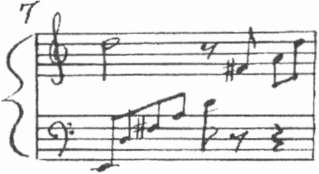
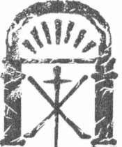
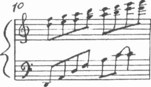
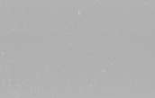
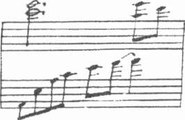
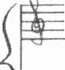
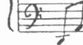
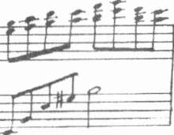

Yine de eve dönmüş olmak daha güzeldi.
Karla kaplı soğuk hafta sonunu konuşarak geçirdiler. Meredith öz annesinin yaşamı, erken ölümü gibi konularda öğrenmek istediği ama dinlemekten de korktuğu tüm soruları Mary'ye sordu. Evlat edinilmesinin koşulları, annesinin intiharı gibi acı veren anıları, cildinin altında cam kırıkları gibi taşıyordu.
(*) Yüzyıl sonu, y i r m i n c i yüzyıl başı.
92
Tapınak
Aslında konunun temelini biliyordu. Öz annesi Jeannette lise son si-ni Ha bir maç sonrası partisinde hamile kaldığını artık yapılacak hiçbir şey kalmayana dek fark etmemişti. İlk birkaç yıl boyunca Jeannette'in annesi I ouisa onlara destek vermişti. Ama erken yaşta kanserden ölünce Mere-tiıth'in yaşamındaki güvenilir tek kişi de yok olmuş ve işler hızla kötüye V.ıtıneye başlamıştı. Her şey dibe vurunca Jeannette'in uzak bir akrabası olan Mary işe el koymuş ve güvenliği için Meredith'in annesine geri dön-memesine karar verilmişti. İki yıl sonra Jeannette kendini öldürünce aralarındaki ilişki resmileştirilmiş ve Mary ile kocası Bili, küçük Meredith'i evlat edinmişlerdi. Gerçi kendi soyadını taşıyor, Mary'ye de adıyla hitap etmeyi sürdürüyordu ama onu annesi olarak kabul etme özgürlüğüne sahip olduğunu da biliyordu.
Pfister Oteli'nde Mary, ona fotoğrafları ve nota kâğıdını vermişti. Bi-
ı ıııci fotoğraf köy meydanında asker üniformasıyla duran genç bir adama aitti. Siyah kıvırcık saçlı, karşısındakinin gözlerinin içine bakan bir adam.
Isını yoktu ama fotoğrafın arkasında 1914 tarihi, fotoğrafçının adı ve yerin Kennes-les-Bains kasabası olduğu yazılıydı. İkinci fotoğrafta eski tip giysiler içinde küçük bir kız vardı. Yine ne isim, ne yer, ne de tarih yazılıydı.
İ Içüncü fotoğraftaki kadının, büyükannesi Louisa Martin olduğunu hemen anlamıştı Meredith. Büyük bir piyanonun önünde oturan kadının fotoğrafı, giysilerine bakılırsa 1930'ların sonunda ya da 1940'ların başında çekilmişti. Mary, Louisa'nın belirli bir üne sahip bir konser piyanisti olduğunu açıklamıştı. Zarftaki piyano parçasının notaları adeta onun imzası gibiydi.
I ler konserin sonunda çalardı.
Fotoğrafa ilk kez bakarken, Louisa'nın müzisyen olduğunu bilseydim acaba müzikten yine de vazgeçer miydim, diye düşünmüştü. Yanıtını bilmiyordu. Öz annesi Jeannette'in piyano çaldığını ya da şarkı söylediğini anımsamıyordu. Yalnızca haykırmalar, ağlamalar ve ardından gelenler...
Meredith müziğin yaşamına sekiz yaşındayken girdiğini sanıyordu.
Yüzeyin altında keşfedilmeyi bekleyen bir şeyin bulunduğunu öğrenmek öyküyü tümüyle değiştirmişti. 2000 yılının aralık ayındaki karlı hafta sonunda Meredith'in dünyası yerinden oynamıştı. Fotoğraflar, notalar 93
Kate M o s s e
onu günün birinde aramaya gideceğinden emin olduğu bir geçmişe bağ-
lamıştı.
Yedi yıl sonra işte bunu yapıyordu. Yarın sayısız kez düşünü kurdu-
ğu Rennes-les-Bains'de olacaktı. Orada bulabileceği bir şeyler olduğunu umuyordu.
Cep telefonuna göz attı. Saat on iki otuz üç. Gülümsedi.
Yarın değil bugün.
Sabah uyandığında gece benliğini saran kaygılar yok olmuştu. Kentten uzaklaşmaya can atıyordu. Herhangi bir biçimde bir şeyler elde edemese bile dağlarda bir otelde kalıp dinlenmek tam da aradığı şeydi.
Toulouse uçağı öğleden sonra kalkacaktı. Paris'te yapmaya niyetlendiği her şeyi yapmıştı ve bu yüzden yola çıkarken yeni bir girişimde bulunmak istemiyordu. Bir süre yatağında kitap okudu, her zaman gittiği kafede güneşin altında kahvaltı etti ve turistik yerleri görmek için yola çıktı.
Rivoli Sokağı'nda tanıdık sütunların gölgeleri altında, sırt çantalı öğ-
rencilerin ve Da Vinci Şifresi peşinde dolanan turist gruplarının arasından kendine bir yol açmaya çalıştı. Louvre Piramidi'ni ziyaret etmeyi aklından geçirdi ama girişteki kuyruğu görünce vazgeçti.
Tuileries Parkı'nda yeşil nietal bir iskemleye otururken, keşke daha ince giyinseydim, diye düşündü. Ekim sonu için son derece sıcak ve nemli bir havaydı. Bu kenti seviyordu ama bugün trafiğin egzoz dumanlan ve sokak kafelerinin sigara dumanları havayı iyice kirletmiş gibiydi. Nehre gidip Bateau Mouche ile bir gezi yapmayı düşündü. Sol Yaka'daki, Paris'e gelen tüm Amerikalılar için adeta bir tapınak gibi kabul edilen efsane Sha-kespeare&Co kitapçısını dolaşmayı düşündü, ama yeterli enerjisi yoktu.
Aslında turist gibi gezmek istiyor ama turistlerin arasına karışmak istemiyordu.
Gezebileceği yerlerin çoğu kapalı olduğundan yine Debussy'ye döndü ve 1890'larda adı Berlin Sokağı olan adresteki çocukluk evini bir kez daha görmeye karar verdi. Ceketini beline bağladı, haritaya ihtiyaç duymadan sokakları geçerek yürümeye başladı. Beş dakika sonra durmuş, eliyle gözlerini gölgeleyerek sokak tabelasına bakıyordu.
94
Tapınak
Kaşlarını çattı. Hiç farkında olmadan Chaussee d'Antin Sokağı'na gelivermişti. Debussy'nin döneminde Trinite Meydanı yakınında, sokağın ııst kısmında kötü bir üne sahip Grande Pinte kabaresi bulunuyordu. Biraz ileride on yedinci yüzyıldan kalma ünlü Hötel Dieu vardı. Şu anda durduğu yerde ise Edmond Bailly'nin büyük bir üne sahip gizli öğretiler kitapçısı olmalıydı. Yüzyılın başlarındaki şaşaalı günlerde şairler, gizli güçlerle uğraşanlar, besteciler mistisizmin ve alternatif dünyaların yeni fikirlerini tartışmak için burada buluşurlardı. Bailly'nin kitapçı dükkânında, huysuz genç Debussy kendini ifade etmekte hiç zorlanmamış olmalıydı.
Meredith binaların kapı numaralarını kontrol etti.
Ama hemen hevesi kırıldı. Olması gerektiği yerde duruyordu ama gö-
ıccek hiçbir şey yoktu. Hafta sonu boyunca hep bu sorunla karşılaşmıştı.
Yeni binalar eskilerin yerini almış, yeni sokaklar genişlemiş, zamanın acımasız ilerleyişi eski adresleri yutuvermişti.
Chaussee d'Antin Sokağı'ndaki 2 numaralı bina şimdi hiçbir özelliği olmayan modern, beton bir yapıydı. Kitapçı dükkânı yoktu. Duvarda bir levha bile görünmüyordu.
Duvarın girintisindeki daracık bir kapı dikkatini çekti. Sokaktan ba-kıldığında kolay fark edilmiyordu. Üzerinde elle yazılmış rengârenk bir tabela vardı.
TAROT FALI BAKILIR.
Altında ise daha küçük harflerle, "Fransızca ve İngilizce" yazılıydı.
Eli, kot ceketinin cebine gitti. Bir gün önce karşılaştığı genç kızın verdiği ve şimdiye dek varlığını unuttuğu el ilanı, katlayıp koyduğu yerde duruyordu. Çıkarıp üzerindeki resme baktı. Oldukça bulanık, kötü bir fo-tokopi idi ama aradaki benzerlik yadsınamazdı.
Resimdeki kadın bana benziyor.
Meredith tabelaya tekrar baktı. Şimdi kapı açıktı. Sanki başını çevirdiği anda biri dışarı çıkıp kilidi açık bırakmıştı. Bir adım daha yaklaşıp içeriye bir göz attı. Küçük holün mor duvarları gümüş yıldızlar, aylar ve astrolojik simgelerle süslenmişti. Tavandan sarkan kristal ve cam süsler ışığı yansıtıyordu.
95
Kate M o s s e
Meredith kendini topladı. Astroloji, kristal küreler, fallar hiç ona göre değildi. Gerçi Mary her sabah günün ilk kahvesini içerken dikkatle astroloji köşesini okurdu, ama Meredith bunlarla hiç ilgilenmezdi. Bu, Mary için adeta bir ayin gibiydi.
Bu konular ona çok uzaktı. Geleceğin önceden yazılmış olması, orada öylece kişiyi beklemesi fikri çılgınlık gibi geliyordu. Fazla kaderci bir anlayıştı, sanki yaşamınızın sorumluluğunu başka birine verir gibiydi.
Kendine kızarak kapıdan geri çekildi. Niçin hâlâ burada duruyordu?
Yürüyüp gitmeliydi. El ilanını aklından çıkarmalıydı.
Aptallık bu. Batıl inanç.
Yine de bir şey yürüyüp gitmesini engelliyordu. Elbette ilgi duyuyordu ama buna duygusal bir ilgi yerine akademik bir ilgi denebilirdi.
Resmin kendisine benzemesi? Adresin karşısına çıkıvermesi? İçeri girmek istiyordu.
Tekrar kapıya yaklaştı. Holden yukarı çıkan dar merdivenin basamakları kırmızı ve yeşile boyanmıştı. Merdivenin bittiği yerde sarı tahta boncukların gölgelediği bir kapı daha vardı. Açık mavi bir kapı.
Ne kadar çok renk var.
Bazı insanların müziği beyinlerinde renk olarak algıladıklarını bir yerde okumuştu. Simeztezi mi? Sineztezi mi? Böyle miydi?
İçerisi serindi. Kapının üzerindeki eski vantilatörden serin hava ya-yılıyordu. Miskin ekim havasında toz tanecikleri uçuşuyordu. Eğer fin de siecle bir atmosfer görmek istiyorsa, yüz yıl önce burada sunulmuş bir deneyimden daha iyi ne olabilirdi ki?
Aslında araştırma sayılırdı.
Bir an içinde her şey dengelendi. Bina adeta soluğunu tutmuş bekliyor, izliyor gibiydi. Meredith, el ilanını sanki bir tılsımmış gibi tutarak içeri girdi. İlk basamağa adımını attı ve yukarı tırmandı.
Yüzlerce kilometre güneyde, Rennes-les-Bains'in yukarısındaki kayın ormanında ani bir esinti yaşlı ağaçların bakır rengi yapraklarını hışırdatıyordu. Ardından, bir piyano üzerinde dolaşan parmaklar gibi eskilerden kalma bir iç çekiş sesi duyuldu.
Son.
Basamakların her dönüşünde ışık değişiyordu.
96
13
o o
DOMAINE DE LA CADE
"Evet, peder, nezaketinize teşekkür ederim. Görüşmek üzere."
Julian Lavvrence ahizeyi bir dakika elinde tutup yerine bıraktı. Yanık ı ileli ve zinde bedeniyle elli yaşından daha genç gösteriyordu. Cebinden sigara paketini çıkardı. Zippo çakmağını çakıp Gauloise sigarasını yaktı.
Vanilya kokulu duman esintisiz havada kıvrılarak yükseldi.
Bu akşamki tören için tüm hazırlıklar tamamdı. Yeğeni Hal duruma ııygun davrandığı takdirde her şey yolunda gidecekti. Genç çocuğa sempati duyuyordu ama Hal'in kasabadaki herkese babasının geçirdiği kaza hakkında sorular sorması pek de doğru değildi. Ortalığı karıştırıyordu.
I laita adli tabibe gidip ölüm belgesindeki ölüm nedenini bile sorgulamıştı.
(Mayla ilgilenen Couiza'daki polis Julian'ın arkadaşıydı ve olayın tek tanığı köyün ayyaşı olduğundan her şey kolaylıkla halledilmişti. Hal'in soruları ise ciddi bir şüphe olarak değil, üzgün bir evladın anlaşılabilir tepkileri olarak algılanmıştı.
Yine de Hal'in çekip gitmesi Julian'ı memnun edecekti. Gerçi gün ışığına çıkarılacak bir şey yoktu ama Hal her taşın altına bakıyordu ve Rennes-les Baiııs gibi küçük bir kasabada er geç dedikodular başlayacaktı.
Ateş olmayan yerden duman çıkmaz. Julian, cenazeden sonra Hal'in Domaine de la Cade'dan ayrılıp İngiltere'ye dönmesini istiyordu.
97
Kate Mosse
Julian ile kardeşi Seymour, yani Hal'in babası dört yıl önce birlikte burayı satın almışlardı. Kardeşinden on yaş büyük olan Seymour emekli olduktan sonra sıkılmaya başlamış ve kâr öngörüleri, kayıt defterleri ve işi büyütme konularına adeta tutkuyla bağlanmıştı. Julian'ın ilgilendiği konular ise daha farklıydı.
İlk kez 1997'de bu bölgeye geldiğinde genel olarak Rennes-les-Bains ve özellikle Domaine de la Cade hakkındaki söylentiler ilgisini çekmişti.
Bölgenin tümü efsaneler ve gizemlerle doluydu. Gömülü hazineler, komp-lolar, gizli dernekler hakkında uydurma öyküler, Tapınak Şövalyeleri'nden ve Katharlardan Vizigotlara, Romalılar ve Keltlere kadar giden söylentiler vardı. Julian'ın hayal gücünü harekete geçiren öykü ise daha yakın tarih-liydi. Geçen yüzyılın sonlarına tarihlenen yazılı kayıtlar arazide aforoz edilmiş bir tapınağın varlığından da üzerine bir tür hazine haritası çizilmiş
bir tarot kartı destesinden ve bir yangınla tapınağın bir bölümünün yok olduğundan söz ediliyordu.
Couiza ile Rennes-le-Château bölgesi, MS beşinci yüzyılda Vizigot İmparatorluğu'nun merkeziydi. Bunu herkes biliyordu. Tarihçiler ve ar-keologlar çok uzun zamandır Vizigotların Roma'yı talan ettikten sonra efsanelere konu olmuş hazineleri, Fransa'nın güneydoğusuna getirmiş
olduklarını düşünüyorlardı. Bu noktada kanıtlar bitiyordu. Julian araştır-dıkça Vizigot hazinesinin büyük bir kısmının burada olduğuna daha fazla inanmaya başlamıştı. Üstelik tarot kartlarının orijinalleri de işin anahtarıydı.
Julian zamanla bu konuya takıntılı hale gelmişti. Kazı için izin aldı ve tüm parasıyla kaynaklarını araştırmaya yatırdı. Ancak, Vizigot mezarlarında kılıçlar, kemer tokaları, kupalar dışında özel bir şey bulamamıştı.
Kazı izninin süresi bitince de yasadışı olarak işini sürdürdü. Tıpkı bir kumarbaz gibi bağımlı olmuştu ve her an yeni bir şeyler bulabileceğine inanıyordu.
Dört yıl önce otel satılığa çıkınca teklif vermek için Seymour'ı ikna etmişti. Aralarında büyük farklılıklar olmasına rağmen iyi bir girişim-98

Tapınak
• I. bulunmuş olmaları doğrusu oldukça ironikti. Seymour'ın işletmenin riiıılıik işleriyle daha fazla ilgilenmeye başladığı son birkaç aya kadar da ııtlaklık iyi yürümüştü. Ne var ki Seymour hesapları görmek istiyordu.
Bahçeye vuran güneş Domaine de la Cade'ın çalışma odasının yüksek l'imnelerinden içeriye doluyordu. Julian başını kaldırıp masasının arka-mdaki tabloya baktı. Yan yatmış sekiz rakamına benzeyen eski bir tarot imgesi sonsuzluğun simgesiydi.
"Hazır mısınız?"
Julian başını çevirince üzerinde siyah takım elbisesi ve kravatıyla ka-l ı n l a duran yeğenini gördü. Gür saçları alnından geriye doğru taranmıştı.
N ıı mili yaşların sonlarında, geniş omuzları ve düzgün cildiyle Hal, amcanım üniversite yıllarındaki sporcu görünümünü çağrıştırıyordu. Özellikle dr futbol ve tenis takımlarının mavi formaları içindeki halini.
Julian eğilip sigarasını pencere kenarındaki cam tablada söndürdü ve viskisinin son yudumunu içti. Cenaze töreninin sona erip işlerin normale ılnmnesi için sabırsızlanıyordu. Çevrede dolaşan Hal'in varlığından sıkıl-mıştı.
"Hemen geliyorum," dedi. "İki dakika."
99
14
o o
PARİS
Meredith merdivenleri tırmandı, boncuklu perdeyi kenara çekip parlak mavi kapıyı açtı.
Hol o kadar dardı ki, kollarını uzatmadan duvarlara dokunabiliyordu.
Sol tarafında çoğunu tanımadığı parlak renkli burç simgeleri vardı. Sağ
tarafta ise oymalı altın yaldız çerçeveli eski bir ayna asılıydı. Bir an aynadaki yansımasına baktı ve dönüp karşısındaki kapıyı tıklattı.
"Merhaba? Kimse yok mu?"
Yanıt yok.
Bir an bekleyip biraz daha hızlı tıklattı.
Yine yanıt yok. Tokmağı yokladı. Kapı açıldı.
"Merhaba!" diye seslendi içeri girerken. "Kimse yok mu? Merhaba?"
Oda küçük ama capcanlıydı. Duvarlar sanki bir çocuk yuvası gibi sarı, kırmızı, yeşile boyanmış; mor, mavi ve gümüş üçgenler, çizgiler ve zikzaklarla bezenmişti. Kapının tam karşısındaki pencerenin lila rengi tül perdesinden içeri ışık doluyordu. Meredith pencereden on dokuzuncu yüzyıldan kalma binanın açık renk taş duvarlarını, siyah dövme demir korkuluklarını, yüksek panjurlu balkonlarını, sardunyalar, mor ve turuncu menekşelerle dolu saksılarını görebiliyordu.
Odanın ortasında, üzeri daireler ve farklı astrolojik simgelerle süslenmiş siyah beyaz kareli örtünün altından ayakları görünen, küçük, dört köşe 100
Tapınak
bir masa vardı. İki tarafındaki iskemlelerin oturulacak yerleri tıpkı bir Van Gogh tablosunu andırıyordu.
Binanın içinde başka bir kapının çarptığını ve yaklaşan ayak seslerini duydu. Heyecandan yanaklarının kızarmaya başladığını hissediyordu.
Odanın öteki ucundaki bambu paravanın ardından bir kadın ortaya çıkın-ca, Meredith davet edilmeden içeri girdiği için utandı.
Kırklı yaşlarda, bir gömlek ve haki pantolon giymiş, omuzlarına inen düzgün kesimli saçları hafif kırlaşmış, güleç yüzlü kadın hiç de Meredith'in hayalinde canlandırdığı bir tarot falcısına benzemiyordu.
"Kapıyı çaldım," dedi Meredith çekinerek. "Kimse yanıt vermeyince içeri girdim. Umarım sakıncası yoktur."
Kadın gülümsedi. "Sakıncası yok."
"İngiliz misiniz?"
Yine gülümsedi. "Doğru tahmin ettiniz. Umarım fazla beklemedi-niz."
Meredith başını salladı. "Yalnızca birkaç dakika."
Kadın elini uzattı. "Adım Laura."
Tokalaştılar. "Ben de Meredith."
Laura bir iskemle çekti ve işaret etti. "Lütfen oturun."
Meredith durakladı.
"İlk gelişte tedirgin olmanız doğaldır," dedi Laura. "Çoğu kişi çekinir."
Meredith cebinden el ilanını çıkarıp masaya bıraktı.
"Nedeni ilk kez geliyor olmam değil. Sokakta bir kız birkaç gün önce bunu vermişti. Buradan geçerken..." Tekrar duraksadı. "Bir çeşit araştırma diyebilirsiniz. Zamanınızı boşa harcamanızı istemem."
Laura el ilanına baktı, tanışıklık ifadesi yüzünde dolaştı. "Kızım sizden söz etti."
Meredith'in gözleri büyüdü. "Öyle mi?"
"Aradaki benzerlik," dedi Laura, Adalet adlı kartın üzerindeki resme bakarak. "Tıpatıp size benzediğini söyledi."
Bir an Meredith'in bir şeyler söylemesini bekledi ama ses çıkmayınca yerine oturdu. "Paris'te mi yaşıyorsunuz?" diye sordu karşısındaki iskemleyi işaret ederek.
101
Kate Mosse
"Yalnızca ziyaret için buradayım."
Laura a gülümsedi. "İlk defa fal baktırdığınız konusundaki düşüncemde haklı olabilir miyim?"
"Evet," dedi Meredith iskemlenin ucuna ilişerek.
Açık bir mesaj, burada kalmayacağım.
"Pekâlâ," dedi Laura. "El ilanını okuduğunuza göre yarım saatlik fa-lın otuz, bir saatliğin ise elli euro olduğunu biliyorsunuz değil mi?"
"Yarım saat yeterlidir."
Birdenbire ağzı kurumuştu. Laura sanki yüzündeki her çizgiyi, her ay-rıntıyı, her gölgeyi okumak istercesine büyük bir dikkatle ona bakıyordu.
"Nasıl isterseniz. Gerçi sizden sonra başka randevum yok; eğer fikri-nizi değiştirirseniz devam edebiliriz. Sormak istediğiniz özel bir şey var mı, yoksa genel olarak bakmamı mı yeğlersiniz?"
"Dediğim gibi benim için bir araştırma. Bir yaşamöyküsü üzerinde çalışıyorum. Bu sokakta, daha doğrusu tam burada sık sık adı karşıma çıkan çok ünlü bir kitapçı dükkânı varmış. Bu rastlantının bana çekici geldiğini söyleyebilirim," diye gülümserken biraz gevşemeye çabalıyordu.
"Gerçi kızınız... kızınızdı değil mi?... Tesadüf diye bir şeyin olmadığını söylemişti."
Laura gülümsedi. "Anlıyorum. Geçmişin bir izini bulmayı umuyorsunuz."
"Tam üstüne bastınız," dedi Meredith rahatlayarak.
Laura başını salladı. "Pekâlâ. Bazı müşteriler belirli bir yorumlama biçimini tercih ederler. Çoğunlukla araştırmak istedikleri işle ilgili bir sorun, bir ilişki, verilecek önemli bir karar gibi özel konuları vardır. Bazıları ise daha genel bir yorumu yeğler."
"Genel yorum olabilir."
Laura gülümsedi. "Tamam. Şimdi hangi desteyi kullanmak istediğinize karar vereceksiniz."
Meredith özür dilercesine baktı. "Üzgünüm ama bu konuda hiçbir bilgim yok. Siz benim yerime seçebilirsiniz."
Laura masanın bir tarafında hepsi kapalı olarak sıralanmış farklı desteleri işaret etti. "Böyle bir başlangıç biraz kafa karıştırıcı olabilir ama 102
Tapınak
sizin seçmeniz daha iyi olacak. Herhangi bir destenin size yakın gelip gelmediğine bir bakın."
"Pekâlâ," dedi Meredith omzunu silkerek.
Laura en yakınındaki desteyi alıp kartları yelpaze gibi masanın üzerine serdi. Kartların arkası koyu lacivert üzerine altın rengi uzun kuyruklu yıldızlarla süslenmişti.
"Çok güzel," dedi Meredith.
"Bu, çok sevilen, Evrensel Waite Tarot destesidir."
Bir sonraki destenin arkası ise kırmızı beyaz desenliydi. "Bir bakı-
ma bu kartlara klasik deste denir," dedi Laura. "Adı Marsilya Tarotu'dur.
On altıncı yüzyıldan kalmadır. Doğrusunu isterseniz günümüz için biraz fazla sadedir ama ara sıra kullanırım. Sorucuların çoğu modern desteleri yeğler."
"Özür dilerim, sorucu nedir?" diye sordu Meredith merakla.
"Özür dilerim," diye sırıttı Laura. "Sorucu fal baktıran, soruları soran kişiye denir."
"Doğru."
Meredith öteki destelere baktı ve diğerlerinden daha küçük olan desteyi işaret etti. Kartların arkası koyu yeşildi ve üzerleri incecik altın ve gümüş çizgilerle bezenmişti.
"Bu nedir?"
Laura gülümsedi. "Bousquet Tarot."
"Bousquet mi?" diye tekrarladı Meredith. Hızla aklından belli belirsiz bir anısı geçti. Bu isme bir yerlerde rastladığından emindi. "Deseni hazırlayan sanatçının adı mı?"
Başım salladı Laura. "Hayır, desteyi basan matbaacının adı. Hiç kimse hazırlayan sanatçının ya da sipariş veren kişinin adını bilmiyor. Tek bildiğimiz şey 1890'ların sonuna doğru güneydoğu Fransa'dan gelmiş
olduğu."
Meredith ensesinde bir ürperti hissetti.
"Güneydoğunun tam olarak neresinden?"
"Kesin olarak bilmiyorum. Sanırım Carcassonne bölgesinde bir yer."
103
Kate Mosse
"Orasını biliyorum," dedi Meredith bölge haritasını gözlerinin önün-de canlandırarak. Rennes-les-Bains, bölgenin tam ortasında kalıyordu.
Laura'nın büyük bir ilgiyle kendisine baktığını hissetti.
"Bir şey mi var?"
"Yoo, bir şey yok," dedi Meredith aceleyle. "Bu ismin tanıdık geldiği-ni düşündüm." Gülümseyerek devam etti. "Özür dilerim, lafınızı kestim."
"Orijinal kart destesinin ya da en azından bir kısmının daha da eskiye dayandığını söyleyecektim. Bu imgelerin ne kadar otantik olduğundan emin değiliz, çünkü Büyük Arkana'nın bazı özellikleri, onların daha sonra eklendiğine ya da en azından değiştirildiğine işaret ediyor. Desenler ve bazı karakterlerin giysileri yirminci yüzyıl stilini andırıyor ama küçük arkana daha klasik."
Meredith kaşlarını çattı. "Büyük Arkana, küçük arkana nedir?" diye gülümsedi. "Üzgünüm ama bu konuda hiç bilgim yok. Devam etmeden önce birkaç soru sorabilir miyim?"
"Elbette," diye güldü Laura.
"Pekâlâ, en basitinden başlayalım. Her destede kaç kart var?"
"Birkaç çağdaş istisna dışında standart bir tarot destesinde büyük ve küçük arkana olarak ayrılan yetmiş sekiz kart vardır. Arcana Latince 'gizler' anlamına gelir. Birden yirmi bire kadar numaralanmış olan kartların hepsi ve numarasız Joker Büyük Arkana tarot destesidir. Hepsinin alegorik bir imgesi ve aynı zamanda gayet açık aydınlatıcı bir anlamı vardır."
Meredith el ilanındaki Adalet resmine baktı.
"Örneğin bunun gibi mi?"
"Kesinlikle. Geri kalan elli altı kart küçük arkanayı oluşturur. Tıpkı oyun kâğıtları gibi dört gruba ayrılır, ama fazladan bir fotoğraflı kart da-ha vardır. Standart tarot destesinde kral, kraliçe, şövalyeden sonra bir de prens vardır. Prensten sonra on gelir. Farklı destelerde bu gruplara tılsım, kupa, asa, kılıç gibi farklı isimler verilir. Daha genel bir tanımla standart iskambil destesinin karo, kupa, sinek ve maça gruplarının karşılığıdır."
"Anlıyorum."
"Uzmanların çoğu bugün kullandığımız kartlara benzeyen en eski tarot kartlarının on beşinci yüzyılın ortasında kuzey İtalya'da ortaya çık-104
Tapınak
tığı konusunda birleşiyor. Ne var ki, modern tarotun canlandırılması, son yüzyılın ilk yıllarında İngiliz gizli güçler uzmanı Arthur Edward Waite yeni bir deste ortaya çıkarınca gerçekleşmiş. Onun buluşu, yetmiş sekiz karta bireysel ve simgesel bir manzara yaratmak olmuş. Ondan önce küçük arkana kartlarında yalnızca rakamlar varmış."
"Bousquet destesi nasıl?"
"Dört grubun saray kartları da fotoğraflı. Çizim tarzı kartların on altıncı yüzyılın sonlarından kaldığını gösteriyor. Kesinlikle Waite öncesi. Ama Büyük Arkana çok farklı. Dediğim gibi karakterlerin giysileri 1890'ların Avrupa tarzı."
"Nasıl oluyor?"
"Matbaacının Bousquet'nin üzerinde çalışmak için tüm bir desteye sahip olmadığı, bu nedenle Büyük Arkana'yı fotoğraflandırdığı ya da elinde var olan kartların stilini ve karakterini kopyaladığı düşünülüyor."
"Nereden kopyalamış olabilir?"
Laura omzunu silkti. "Bulabildiği kartlardan ya da herhangi bir kitapta gördüğü orijinal desteden kopyalamış olabilir. Dediğim gibi, ben uzman değilim."
Meredith altın ve gümüş çizgili koyu yeşil sırtlı kartlara baktı. "Her kimse harika bir iş çıkarmış."
Laura tılsım grubunu astan krala kadar bir yelpaze gibi açtı ve Büyük Arkana destesinden birkaç kart ekledi.
"İki stil arasındaki farkı görüyor musunuz?"
Meredith başıyla onayladı. "Elbette. Ama yine de özellikle renkleri birbirine çok benziyor."
Laura kartlardan birini işaret etti. "Bousquet Tarot'un başka bir özelliği daha var. Saray kartlarının adı kral ve kraliçe yerine Mösyö ve maîtresse olarak değiştirilmiş. Ayrıca Büyük Arkana'da da bazı bireysel değişiklikler yapılmış. Örneğin II numaralı karta genellikle azize adı verilir. Buradaki adı ise la pretress. Aynı figür Les Amoureux ya da âşıklar diye bilinen VI numaralı kartta da görünüyor. Ayrıca Le Diable denilen XV numaralı karta bakarsanız, aynı kadın figürünün şeytanın ayağına zincirlenmiş olduğunu görürsünüz."
105
Kate M o s s e
"Bu durum olağandışı mı?"
"Destelerin birçoğu VI ve XV numaralı kartları birbirine bağlar, ama genellikle II numaralı kartı bağlamaz."
"Yani birisi bağımsız olarak ya da sipariş üzerine bu kartları bireysel-leştirmek için epey uğraşmış," dedi Meredith yüksek sesle düşünerek.
Laura başını salladı. "Doğrusunu isterseniz bu destenin Büyük Arkana'sındaki resimlerin gerçek insanlara ait olup olmadığını ben de merak ediyorum. Bazılarının yüzündeki ifade çok canlı."
Meredith el ilanındaki Adalet kartı imgesine baktı.
Onun yüzü tıpkı benimki gibi.
Bir an karşısında oturan Laura'ya baktı ve kendisini Fransa'ya getiren özel araştırma konusundan söz etmeyi düşündü. Birkaç saat içinde Rennes-les-Bains'e gideceğini söylemek istedi. Ama Laura tekrar konuşmaya başlamış ve o anı kaçırmıştı.
"Bousquet Tarot ayrıca geleneksel bağlantılara da saygı duyar. Örne-
ğin kılıçlar bir hava grubudur ve akıl ile zekâyı simgeler; ateş grubu olan asalar, enerji ile çatışmayı simgeler; kupalar, su ve duygularla bağlantılıdır.
Tılsımlar ise..." Altın paraları andıran şekiller arasında tahtında oturan kral resmine parmağıyla vurarak devam etti. "Fiziksel gerçeği, hazineyi simgeleyen toprak grubudur."
Meredith adeta hepsini belleğine kazımak istercesine imgelere baktı ve başını sallayıp yeterli olduğunu Laura'ya belirtti.
Laura masayı temizleyip, yalnızca Büyük Arkana'yı bıraktı ve üç sıra halinde en küçükten en büyüğe doğru kartları sıraladı. Numarası olmayan Joker, yani joker kartını tek başına en üste yerleştirdi.
"Ben Büyük Arkana'yı bir yolculuk gibi görmeyi yeğlerim," dedi Laura. "Bunlar yaşamın değiştirilemeyen, karşı durulamayan, ölçülemeyen önemli konularıdır. Böyle dizilince, üç sıranın gelişmenin üç farklı yönünü nasıl simgelediği açıkça belli oluyor. Bilinç, bilinçaltı ve yüksek bilinç."
Meredith'in kuşkucu yönleri ortaya çıkmaya başlamıştı.
Bu noktada gerçekler sona eriyor.
106
Tapınak
"Her sıranın başında güçlü bir imge var. Le pagad, yani büyücü birinci
• ııanın başında. Laforce ya da güç ikinci sıranın başında. En son sıranın başında ise XV numaralı kart olan Le diable ya da şeytan var."
Şeytanın çarpık bedenine bakarken Meredith'in aklına belli belirsiz biı şeyler geldi. Şeytanın ayağına zincirlenmiş kadın ve erkeğin yüzlerini t.tııir gibiydi. Sonra aklındakiler yok oldu.
"Büyük Arkana'yı böyle dizmenin avantajı, Joker' in cahillikten ay-dınlanmaya giden yolculuğunu göstermesinin yanı sıra kartlar arasında belirgin dikey bağlantılar kurmasıdır," diye sözlerini sürdürdü Laura.
Böylece gücün, büyücünün oktavı; şeytanın da gücün oktavı olduğunu görebilirsiniz. Başka bağlantılar da derhal göze çarpıyor. Büyücü ile gücün başlarının üzerinde sonsuzluk işareti var. Ayrıca şeytan da sihirbazı çağ-
ı iştiran bir biçimde kolunu yukarı kaldırmış."
"Aynı kişinin iki ayrı yönü gibi."
"Olabilir," dedi Laura. "Tarot aslında modeller ve kartlar arasındaki ilişkiler üzerine kurulmuştur."
Meredith tam anlamıyla dinlemiyordu. Laura'nın söylediği bir söz oıııı tedirgin etmişti. Bir an düşünüp, buldu.
Oktavlar.
"Bu ilkeleri genellikle müzik tanımlarıyla mı açıklıyorsunuz?"
"Bazen," dedi Laura. "Aslında sorucuya bağlı. Tarotun nasıl yorum-lanacağını açıklamanın birçok yolu var ve müzik de bunlardan biri. Niçin sordunuz?"
Meredith omzunu silkti. "Çünkü ben bu alanda çalışıyorum. Herhangi bir biçimde bunu algılayıp algılamadığınızı merak ettim." Bir an duraklayıp devam etti. "Ama bu konuda size hiçbir şey söylemediğimden eminim."
Laura'nın yüzünde belli belirsiz bir gülümseme dolaştı. "Bu fikir sizi lahatsız mı etti?"
"Bunu fark etmiş olmanız mı? Yoo, hayır," diye yalan söyledi. Şu anda yaşadığı duygular hoşuna gitmiyordu. Yüreği belki de kim olduğu 107
Kate M o s s e
hakkında bir şeyler öğrenebileceğini söylüyordu. Bu nedenle Laura'nın her şeyi doğru yapması gerekirdi. Ama bir yandan da aklı bunun saçmalık olduğunu söylüyordu.
Meredith, Adalet kartını işaret etti. "Eteğinin çevresinde müzik notaları var. Garip değil mi?"
Laura gülümsedi. "Kızımın dediği gibi tesadüf diye bir şey yoktur."
Komik olduğunu düşünmediği halde Meredith de gülümsedi.
"Tüm fal bakma sistemleri tıpkı müzik gibi belirli modeller içinde ilerler," diye açıkladı Laura. "Paul Foster Case adında bir Amerikalı iskambil kâğıdı falcısı vardı. Büyük Arkana kartlarının özelliklerini müzik skalasına bağlayan bir kuram geliştirmişti."
"Bu konuyu araştırmak isterim."
Laura kartları topladı. Kısa bir süre, ama hiç gözlerini kırpmadan Meredith'in gözlerinin içine baktı. Meredith kapıldığı kaygı, kuşku ve umudun gözlerine yansıdığını düşünüyordu.
"Başlayalım mı?" diye sordu Laura.
Bu sözleri beklediği halde Meredith'in yüreği hop etti.
"Elbette, niçin olmasın?"
108
10
o
o
"Bousquet destesini mi kullanalım?" diye sordu Laura. "Siz bu desiı-vle aranızda bir bağ hissediyorsunuz."
Meredith kartlara baktı. Kartların arkası Mary'nin Chapel HilPdeki rvıııı çevreleyen ormanı çağrıştırıyordu. Yaz ve sonbahar renkleri bir ara-
ılavdı. Büyüdüğü Milwaukee'nin sessiz kenar mahallelerinden ne kadar laikliydi.
Başını salladı. "Pekâlâ."
Laura diğer desteyle birlikte el ilanını da masadan kaldırdı.
"Daha önce konuştuğumuz gibi genel bir yorum yapacağım. Büyük w küçük arkanaların tümünü birlikte Kelt Haçı biçiminde, on kartla kendi yöntemimle açacağım. Şu anda hangi noktada olduğunuz, yakın geçmi-ini/.de neler olduğu ve geleceğin neler getirebileceği hakkında mükemmel İm genel görünüm sunacak."
Ve tekrar çılgın dünyaya döndük.
Ama artık Meredith de öğrenmek istiyordu.
"Bousquet Tarot kartlarının yayınlamdığı on dokuzuncu yüzyılın
•onlarında tarot falı hâlâ gizemini koruyordu ve özel yorumcularla seç-
kinlerin denetimi altındaydı," diye gülümsedi Laura. "Günümüzde her
'•y çok farklı. Modern yorumcular insanlara kendilerini ve yaşamlarını değiştirmeleri için güç, gerekli gereçler ya da cesaret vermeye çalışıyorlar.
I ger sorucular gizli motivasyonları ya da bilinçaltı davranış biçimleriyle yli/.leşirlerse, yorum daha değerli olabiliyor."
109
Kate Mosse
Meredith başını salladı.
"Kötü tarafı ise neredeyse sonsuz yorum çeşitlemesinin olması. Ör-neğin bazıları, Büyük Arkana kartlarının hayatınızın sizin kontrolünü/, dışındaki bir duruma bağlı olduğunu, buna karşılık küçük arkana kartlarının kaderinizin sizin elinizde olduğunu gösterdiğini söyler. Başlamadan önce ben yorumu kesin olacak değil, olabilir diye gördüğümü açıklamak isterim."
"Pekâlâ."
Laura kart destesini masaya bıraktı. "Kartları çok iyi karıştırın Meredith. Acele etmeyin ve karıştırırken neyi öğrenmek istediğinizi, bugün sizi buraya getirenin ne olduğunu düşünün. Bazıları gözlerini kapatmanın yararı dokunduğunu söylüyor."
Açık pencereden gelen hafif esinti, daha önceki nemli havadan sonra ferahlatmıştı. Meredith uzanıp kartları aldı ve karıştırmaya başladı.
Sürekli tekrarladığı harekete kendini bırakırken ağır ağır şimdiki zaman bilincinden uzaklaşmaya başladı.
Anı, imge, yüz ifadesi parçacıkları; sepya ve gri tonlarında aklında dolaşarak eriyip gitti. Çok güzel, çok kırılgan ve hasar görmüş annesi...
Piyanonun önünde oturan büyükannesi Louisa... Sepya tonlu fotoğraftaki askeri üniformalı, ciddi ifadeli genç adam.
Hiç tanımadığı ailesi...
Bir an için kendini ağırlığını yitirmiş, adeta yüzüyormuş gibi hissetti.
Masa, iki iskemle, renkler ve kendisi tümüyle farklı bir açıdan görünüyordu.
"Pekâlâ. Hazır olunca gözlerinizi açın." Laura'nın sesi çok uzaktan gelir gibiydi. Bir notanın bittikten sonraki sesi gibi işitilen, ama duyulma-yan bir ses.
Oda önce bulanık sonra daha parlak renklerle onu karşılayınca Meredith gözlerini kırptı.
"Şimdi desteyi masaya bırakın ve sol elinizle üçe ayırın."
Meredith söyleneni yaptı.
"Önce ortadakini, sonra üsttekini ve ardından alttakini alarak desteyi birleştiriri." Dediklerini yapana kadar Laura'nın bekleyeceğini hissediyordu. "Pekâlâ, ilk çekeceğiniz karta biz gösterge kartı diyoruz. Bu yorumla-110
Tapınak
ma şeklinde bu kart sorucuyu, yani sizi, şu anda olduğunuz kişiyi temsil ediyor. Kartın üzerindeki imgenin cinsiyeti önemli değil, çünkü her kart hem erkek hem dişi niteliklerini taşıyor."
Meredith destenin ortasından bir kart çekip yüzü yukarı gelecek şekilde önüne koydu.
"La Fille d'Epees," dedi Laura. "Kılıçların kızı. Kılıçlar hava ve zekâ grubudur. Bousquet destesinde kılıçların kızı güçlü bir figürdür, bir dü-
şünürdür. Ama başkalarıyla çok sıkı bağlan yoktur. Bunun nedeni belki gençliği, çünkü bu kart genellikle genç birine işaret eder ya da verdiği kararlara... Bazen de bir yolculuğun başlangıcına işaret eder."
Meredith kartın üzerindeki resme baktı. Narin, ufak tefek kadının üzerinde dizlerine kadar inen kırmızı bir elbise vardı, düz siyah saçları omuzlarına dökülmüştü. Bir dansçıyı andırıyordu. İki eliyle kılıcı tutuyor ama ne tehdit ediyor ne de tehdit altındaymış gibi görünüyordu. Daha çok bir şeyi koruyan bir görünümü vardı. Tam arkasında bir dağın sivri doruğu beyaz bulutların süslediği koyu mavi göğe doğru yükseliyordu.
"Aktif bir karttır," dedi Laura. "Olumludur. Kılıçlar grubunun içindeki az sayıdaki olumlu karttan biridir."
Meredith başını salladı. Bunu görebiliyordu.
"Bir kart daha çekin," dedi Laura. "Çektiğiniz kartı kılıçların kızı kartının sol tarafına koyun. Bu kart şu anda sizin içinde bulunduğunuz durumu gösteriyor. Şu anda çalıştığınız ya da yaşadığınız ortamı, işinizin sizin üzerinizdeki etkisini anlatıyor."
Meredith kartı söylenen yere koydu.
"Kupa onlusu," dedi Laura. "Kupa, su ve duygu grubudur. Bu da olumlu bir karttır. Bir döngünün bitip, bir başkasının başladığına işaret eder. Sizin bir eşikte durduğunuzu, şu andaki başarılı, tatmin edici du-rumunuzdan çıkıp, bir değişiklik yapmaya hazır olduğunuzu gösteriyor.
Zamanın değişeceğini söylüyor."
"Nasıl bir eşik bu?"
"İş ya da kişisel yaşamınız, ya da her ikisi birden olabilir. Biraz daha yorumlayınca daha açıkça anlaşılacaktır. Bir kart daha çekin."
Meredith üçüncü kartı çekti.
111
Kate Mosse
"Bunu gösterge kartının altına, sağına doğru koyun. Bu kart yolunuza çıkabilecek engelleri simgeliyor. İlerlemenize, değişiklik yapmanıza ya da hedefe ulaşmanıza engel olabilecek koşulları ve hatta insanları gösteriyor."
Meredith kartı çevirip masaya yerleştirdi.
"Le pagad," dedi Laura. "I numaralı kart, büyücü. Pagad genellikle Bousquet destesinde kullanılan eski bir sözcüktür ve diğer destelerde kullanılmaz."
Meredith resme dikkatle baktı. "Bu kart bir insanı mı simgeliyor?"
"Genellikle evet."
"Güvenilecek biri mi?"
"Koşullara bağlı. Adından anlaşılacağı gibi büyücü, sizin yanınızda olabilir de, olmayabilir de. Çoğu zaman değişimin katalizatörü gibi davranır ama bu kartta daima bir hile belirtisi vardır; muhakeme ile önseziyi dengeler. Büyücü; su, hava, ateş ve topraktan oluşan tüm elementlerin ve destedeki dört grubun kontrolünü elinde tutar. Görünümü, bunların bece-rilerini dil ya da bilgiyle sizin yararınıza kullanabilecek birini çağrıştırır.
Aynı şekilde bu becerileri kullanarak herhangi bir biçimde yolunuza engeller koyabilir."
Meredith karttaki resmin yüzüne dikkatle baktı. Delici mavi gözleri vardı.
"Yaşamınızda böyle bir rol üstlenecek birini tanıyor musunuz?"
Meredith başını salladı. "Aklıma kimse gelmiyor."
"Belki günlük yaşamınızda olmayan, ama sizin üzerinizde etkisi olan geçmişinizden gelen biri de olabilir. Yanınızda olmadığı halde üzerinizde olumsuz bir etki yaratan biri de olabilir. Belki de tanışacağınız biridir. Ya da tanıdığınız ama şimdiye kadar yaşamınızda önemli bir rol oynamamış
biridir."
Meredith karta dikkatle bakarken imgenin içerdiği çelişkileri düşünüp bir anlam çıkarmaya çabalıyordu. Hiçbir şey ya da hiç kimse gelmiyordu aklına.
Bir kart daha çekti. Bu kez tepkisi farklı oldu. Bir sıcaklığın, bir duygunun benliğini kapladığını hissetti. Bir aslanın yanında duran genç 112
Tapınak
hıı kızın resmiydi. Başının üzerindeki sonsuzluk simgesi bir taç gibi gö-
ıllniiyordu. Eski modaya uygun, kabarık kollu yeşil ve beyaz bir giysisi v.ıulı. Bakır rengi bukleleri sırtından incecik beline kadar dökülüyordu.
Meredith her zaman Debussy'nin La Damoiselle Elue, Mutlu Genç Kız melodisini yarı Rossetti yarı Moreau imgesi olarak düşlemişti.
Laura'nın daha önce söylediklerini anımsayınca bu imgenin gerçek luı kişiye ait olduğunu düşündü. Kartın üzerindeki ismi okudu: Güç. VIII numaralı kart. Gözleri o kadar yeşil, o kadar canlıydı ki.
Kesme bakarken bunu ya da benzerini bir fotoğrafta, bir tabloda ya da luı kitapta gördüğünden emin oldu. Çılgınlık. Elbette olamazdı. Ama yine de bu fikir aklına takıldı.
Meredith karşısında oturan Laura'ya baktı.
"Bana bu kartı anlatın," dedi.
113
10
o
o
"VIII numaralı kart olan Güç, aslan burcunun simgesi ile bağlantılı-
dır," dedi Laura. "Çekilen dördüncü kart sorucunun genellikle bilinçaltın-da olan, farkına varmadığı, fal baktırma kararını etkileyen tek bir baskın soruya işaret eder. Güçlü bir yönlendiricidir. Sorucuya yol gösteren bir şeydir."
Meredith hemen itiraz etti. "Ama olaylar böyle gelişmedi ki!"
Laura elini kaldırdı. "Evet, tesadüf olduğunu söylemiştiniz bana. Kı-
zım elinize bir ilan tutuşturmuş, bugün buraya gelmişsiniz, boş vaktiniz varmış... Ama başka bir nedeni daha olabilir mi? Şu anda karşımda otur-manızın bir nedeni olabilir mi?" Bir an duraklayıp devam etti. "Kapının önünden geçip gidebilirdiniz. İçeri girmeyi seçmeyebilirdiniz."
"Belki. Bilmiyorum." Biraz düşünüp devam etti. "Sanırım."
"Bu kartla arasında bağlantı kurmak istediğiniz belirli bir kişi ya da bir durum var mı?"
"Aklıma gelmiyor ama belki de..."
"Evet?"
"Kızın yüzü. Tam olarak çıkaramıyorum ama yüzü tanıdık gibi geliyor."
Laura'nın kaşlarını çattığını fark etti.
"Ne oldu?"
Laura gözlerini masada açık duran dört karta dikti. "Kelt Haçı biçiminde yapılan yorumlar çoğunlukla düzgün sıralı bir modeli izler."
114
Tapınak
Meredith, Laura'nın sesindeki kararsızlığı fark etmişti. "Gerçi yorumun h,ısındayız ama ben, hangi olayların geçmişe, hangilerinin bugüne ve luııgilerinin geleceğe ait olduğunu hep açıkça görebiliyordum." Bir an durakladı. "Ama burada her nedense zaman çizgisi karışıyor. Sanki olaylar bıılanıklaşıyormuş gibi sıralama ileri geri zıplıyor. Olaylar, geçmişle bugün arasında gidip geliyor."
Meredith öne eğildi. "Neden söz ediyorsunuz? Çektiğim kartları yo-
ı ııuılayamadığınızı mı söylüyorsunuz?"
"Hayır," dedi Laura aceleyle. "Tam olarak değil." Tekrar durakladı.
Doğrusunu isterseniz Meredith, kartların ne dediğinden emin değilim."
omzunu silkerek devam etti. "Devam edersek her şey yerine oturacaktır."
Meredith nasıl tepki vereceğini bilemiyordu. Laura'nın daha açık olmasını istiyordu ama gerekli yanıtları almak için hangi soruları soracağını bilmediğinden sesini çıkarmadı.
Sonunda sessizliği bozan Laura oldu.
"Bir kart daha çekin. Beşinci kart, yakın geçmişinizi simgeleyecek."
Meredith, tılsımların sekizini ters olarak açtı ve Laura'nın sıkı çalış-
ına ve yeteneklerin bazen yeterince yararlı olmadığı hakkındaki önerisine surat astı.
Yakın gelecekle bağlantılı olan altıncı kart, kılıçların sekizi de ters olarak açıldı. Meredith tüylerinin diken diken olduğunu hissetti. Laura'ya bir göz attı ama ortaya çıkmaya başlayan düzene özel bir ilgi gösterdiğini belli etmedi.
"Bu kart, açıkça harekete geçildiğini gösterir," dedi Laura. "Sıkı ça-lışmanın ve projelerin semeresini göreceğinize işaret eder. İşler ilerlemeye başlıyor. Bazı açılardan tüm sekizlerin en iyimseridir." Bir an durup, Meredith'e baktı. "Sanırım işle bağlantılı olarak önerdiklerimin sizin için bir anlamı vardır."
Meredith başıyla onayladı. "Şu anda bir kitap yazmaktayım. Yani evet, bence bir anlamı var." Duraklayıp devam etti. "Ama... ama kart ters açıldığına göre anlamı değişiyor mu?"
"Ters açılması biraz gecikmeyi belirtir. Bir proje beklerken, enerjinin dağıldığını gösterir."
115
1
Kate Mosse
Örneğin Rennes-les-Bains'e gitmek için Paris'ten ayrılmak gibi, diye düşündü Meredith. Meslek yerine özel yaşamı öne çıkarmak gibi.
"Ne yazık ki, bunun da anlamı var," dedi acı bir gülüşle. "Acaba bu kartı yoldan sapmamak ya da başka konularla uğraşmamak için bir uyarı olarak yorumlamak mı gerekir?"
"Herhalde," dedi Laura. "Ama bazen gecikme kötü olmayabilir. Doğru zamanlama sizin için en iyisi olacaktır."
Meredith, Laura'nın tekrar bir kart çekmesini söylemeden önce onun çektiği karta gösterdiği ilginin azalmasını beklediğini, kendisini izlediğini hissetti.
"Bu kart şu andaki ya da yakın gelecekteki olayların nasıl bir ortamda gerçekleşeceğini simgeleyecek. Bunu altıncı kartın yukarısına koyun."
Yedinci kartı çeken Meredith onu gösterilen yere yerleştirdi.
Kararmış gökyüzünün altında uzun, gri bir kule resmiydi. Tek bir şimşek çizgisi resmi ikiye ayırır gibiydi. Karta karşı aniden antipati duyan Meredith titredi. Hepsinin saçmalık olduğuna kendini inandırmaya çabalarken bir yandan, keşke bunu çekmeseydim, diye düşünüyordu.
"La Tour," diye okudu kartın adını. "Kule, iyi bir kart değil mi?"
"Hiçbir kart için iyi ya da kötü denmez," dedi Laura, ama yüz ifadesi farklı bir mesaj veriyordu. "Yorumun neresinde ortaya çıktığına ve çevresindeki kartlarla olan ilgisine bağlıdır. Kule, geleneksel olarak dramatik bir değişime işaret eder. Aynı zamanda kaos ve yıkım anlamına da gelir."
Bir an başını kaldırıp Meredith'e baktı, sonra bakışlarını tekrar karta çevirdi. "Olumlu tarafından bakılınca buna özgürleşme kartı diyebiliriz.
Hayallerimiz, kısıtlamalarımız, sınırlarımız yıkılır ve bizi yeni bir başlangıç için özgür kılar. İsterseniz bir esin ışıltısı diyebilirsin. Olumsuz olarak nitelendirmek gerekmez."
"Elbette, bunu anlıyorum," dedi Meredith sabırsızlanarak. "Peki buradaki anlamı ne? Şu anda... şu anda böyle yorumlamıyorsunuz, değil mi?"
Laura gözlerinin içine baktı. "Çelişki. Ben çelişki olarak görüyorum."
"Nelerin arasında bir çelişki var?" diye sordu Meredith.
116
Tapınak
Bunıı ancak siz bilebilirsiniz. Daha önce söz ettiğiniz gibi, kişisel ve mesleki gereksinimleriniz arasında bir çelişki olabilir. Aynı şekilde insanlann sizden beklentileriyle sizin onlara verebildikleriniz arasındaki tutarsızlık bir çeşit yanlış anlamaya yol açabilir."
Bilinçaltına gömdüğü bir düşüncenin bilinçli olarak aklına gelmesini önlemeye çabalayan Meredith, sesini çıkarmadı.
Ya geçmişim hakkında her şeyi değiştirecek bir bulguya ulaşırsam?
Bu kartın özellikle bağlantılı olabileceği bir şey aklınıza geliyor mıi'" diye sordu Laura usulca.
"Ben..." diye söze başladı ve sustu. Sonra, "Hayır," dedi, ama yanıt-
ı ııken istediği kadar kararlı görünmediğini hissediyordu. "Dediğiniz gibi, ı,nk laikli şeylere işaret edebilir."
Bundan sonra ne geleceğini merak ederek bir kart daha çekti.
Benliği simgeleyen kart, kupa sekizlisiydi.
"Dalga geçiyorsun," diye mırıldanıp bir sonraki kartı aceleyle çekti.
K ılıçların sekizlisi.
Laura'nın soluğunu tuttuğunu duydu.
Bir oktav daha.
"Tüm sekizlerin gelme ihtimali yüzde kaçtır?"
Laura hemen yanıtlamadı. "Bu durum biraz olağandışı," dedi sonun-du.
Meredith açılan kartları inceledi. Oktavlar yalnızca Büyük Arkana kanları ya da sekizler arasında bağlantı kurmuyordu. Aynı zamanda bu,
\ıldlet resmindeki elbisenin eteğindeki notaları ve Güç kartındaki kızın yeşil gözlerini de belirtiyordu.
"Tüm kartların açılma olasılığı eşittir," dedi Laura, ama Meredith, onun aslında böyle düşünmediği halde söylemesi gerektiğine inandığı için İm açıklamayı yaptığını anlamıştı. "Aynı sayı ya da resmin olduğu dört kartın açılma olasılığı diğer kombinasyonlarla aşağı yukarı aynıdır."
"Peki daha önce hiç böyle bir durumla karşılaştınız mı?" diye ısrar mı Meredith konuyu kapatmasını istemeyerek. "Aynı sayının dördünün birden açılması? Gerçekten?... Bir de Kule kartı var, yani XVI numara. Bu da sekizin iki katı."
117
Kate Mosse
Laura isteksizce başını salladı. "Pek hatırlamıyorum."
Meredith parmağıyla karta vurdu. "Kılıçların sekizlisi neye işaret ediyor?"
"Engelleme. Birinin ya da bir şeyin sizi engellediğini gösteriyor."
"Yani büyücü kartı gibi mi?"
"Belki ama..." Laura duraklayıp sözcüklerini özenle seçti. "Burada paralel öyküler var. Bir yanda iş ya da özel yaşamınızda ya da ikisinde birden önemli bir projenin derhal sonuçlanacağının açık kanıtı var. Ne dersiniz?"
Meredith kaşlarını çattı. "Devam edin."
"Bunun yanı sıra bir yolculuğun ya da koşulların değişmesinin ipuç-
ları var."
"Pekâlâ, bunlar uygun gibi diyelim, ama..."
Laura sözünü kesti. "Bir şey daha olmalı. Pek açık değil ama bir şey daha var, hissediyorum. Son açtığınız kart... Keşfedeceğiniz ya da öğrene-ceğiniz bir şeyi gösteriyor."
Meredith'in gözleri kısıldı. Şimdiye kadar bunun zararsız bir eğlence olduğunu düşünmeye çalışmıştı. Hiçbir anlamı olmadığına kendini inandırmıştı. Öyleyse yüreği niçin durmadan atıyordu?
"Unutmayın Meredith," dedi Laura ısrarla. "Kart çekip yorumlayarak fal bakma sanatı nelerin kesin olarak gerçekleşeceğini ya da gerçekleş-
meyeceğini göstermez. Daha çok olasılıkları görmeye; bilinçaltındaki motivasyon ve arzuların herhangi bir davranış modeli oluşturup oluştur-mayacağını keşfetmeye yöneliktir."
"Biliyorum."
Yalnızca zararsız bir eğlence.
Ama Laura'nın gerginliği, yüzündeki yoğun dikkat ifadesi, konuyu çok ciddi bir hale getiriyordu.
"Tarot falı özgür iradeyi kısıtlamak yerine artırmalıdır. Çünkü yapı-
lan yorumlar bize kendimiz ve karşımızdaki sorunlar hakkında daha fazla bilgi verir. Daha iyi kararlar vermek için kendini özgür hissedersin. Hangi yoldan yürüyeceğine karar verirsin."
Meredith başıyla onayladı. "Anlıyorum."
118
Tapınak
Birdenbire falın sona ermesini istedi. Son kartı çek, Laura'nın söyleyı ı eklerini dinle ve buradan çek git.
"Bunu unutmamaya gayret edin."
Laura'nın sesindeki ciddi uyarıyı algılıyordu. Artık o anda iskem-leden kalkıp gitme dürtüsüne karşı koymaktan başka yapacağı bir şey I almamıştı.
"Sonuncu, yani onuncu kart yorumu tamamlayacak. En üste, sağ tarafa koyacaksınız."
Meredith'in eli bir an destenin üzerinde dolaştı. Teniyle, kartların arkasındaki yeşil, gümüş ve altın renkler arasındaki görünmez bağlantı aııkı ortaya çıkmıştı.
Sonra kartı çekti ve çevirdi.
Dudaklarının arasından istemsiz bir ses yükseldi. Masanın öteki tara-ftnda Laura'nın yumruğunu sıktığını gördü.
"Adalet" dedi Meredith sakin bir sesle. "Kızınız benim ona benzedi-eıını söylemişti," diye ekledi. Oysa bunu daha önce de belirtmişti.
Laura göz göze gelmekten kaçındı. " Adalet ile bağlantılı olan değerli laş opaldir," dedi. Meredith, Laura'nın adeta kitaptan bir bilgi aktarır gibi konuştuğunu düşündü. "Bu kartla bağlantılı renkler ise safir ve topazdır.
Astrolojik işaret ise terazi burcudur."
Meredith bir an güldü.
"Ben terazi burcuyum. Doğum günüm 8 Ekim."
Laura, bunu öğrendiğine hiç şaşırmamış gibi tepki göstermedi.
"Bousquet destesinde Adalet çok güçlü bir karttır," diye devam etti.
Eğer Büyük Arkana'yı Joker' in mutlu cahillikten aydınlanmaya giden yolculuğu olarak kabul ederseniz, Adalet yolun tam yarısında durur."
"Bunun anlamı nedir?"
"Genellikle dengeli bir görüşe sahip olma talimatı diye yorumlanır.
Sorucu yoldan sapmamaya, durumu adil ve uygun bir biçimde algılamaya özen göstermelidir."
Meredith gülümsedi. "Ama baş aşağı duruyor." Ne kadar sakin oldu-
ğuna kendisi de şaşırıyordu. "Ters oluşu her şeyi değiştirmez mi?"
Laura bir an yanıt vermedi.
119
Kate Mosse
"Değiştirmez mi?" diye yineledi Meredith.
"Baş aşağı durması bazı haksızlıklar olabileceği konusunda uyardığı anlamına gelir. Örneğin önyargı, taraf tutma ya da hukuksal açıdan adaletin yerine getirilmemesi gibi. Kişinin yargılandığı ya da suçlandığı gibi durumlarda öfkeye kapıldığına da işaret eder."
"Sizce bu kart beni mi simgeliyor?"
"Bence evet," dedi Laura sonunda. "Bunun nedeni en son kart olarak çekilmesi değil. Aranızdaki fiziksel benzerlik de tek neden değil." Tekrar durakladı.
Meredith ona baktı. "Laura?"
"Pekâlâ, sizi simgelediğine inanıyorum ama bu arada size yapılan bir haksızlığı gösterdiğini düşünmüyorum. Daha çok kendinizi bir yanlışı düzeltmeye çalışırken bulacağınızı düşünüyorum." Başını kaldırıp Meredith'in yüzüne baktı. "Sanırım daha önce de bunu hissetmiştim. Açı-
lan kartların işaret ettiklerinin ardında belli öykülerin yattığı duygusuna kapılmıştım."
Meredith masada açık duran on karta baktı. Laura'nın sözleri beyninde dönüp duruyordu.
Olasılıkları görmek, bilinçaltındaki motivasyonları ve arzuları keş-
fetmek.
Buz mavisi gözleriyle büyücü ile şeytan birbirinin oktavı gibiydi. Art arda çıkan sekizler; tanımanın, başarının rakamı.
Meredith uzanıp dördüncü ve sonuncu kartları eline aldı. Güç ve Adalet.
Her nasılsa birbirleriyle ilgiliymiş gibi görünüyorlardı.
"Bir an için anladığımı sanmıştım," derken Laura'dan çok kendi kendine konuşur gibiydi. "Sanki daha derin bir anlamı var gibiydi."
"Ya şimdi?"
Meredith başını kaldırdı. Uzun bir süre bakıştılar.
"Artık yalnızca imgeler, modeller ve renkler..."
Sözcükler havada asılı kaldı. Laura birden, açılan kartları daha fazla görmek istemiyormuş gibi hemen topladı.
"Bunları almalısınız," dedi Laura. "Kendi kendinize çözümlemelisi-niz."
120
Tapınak
Meredith yanlış duymuş gibi şaşkınlıkla baktı. "Anlamadım?"
Ama Laura kartları uzatıyordu. "Bu deste size ait."
Yanlış anlamadığını fark edince itiraz etmeye çabaladı.
"Ben alamam..."
Laura masanın altına eğilip siyah ipek bir kumaş çıkardı ve kartları sardı. "İşte," diyerek Meredith'e doğru itti. "Başka bir tarot geleneği. Çoğu kişi, insanın kendi parasıyla kart almaması gerektiğine inanır. Kendiniz için en uygun destenin hediye edilmesini beklemeniz gerektiğini düşü-
nür."
Meredith başını salladı. "Laura, bunu asla kabul edemem. Ayrıca bu kartlarla ne yapmam gerektiğini bile bilmiyorum."
Ayağa kalkıp ceketini giydi.
Laura da ayağa kalktı. "İhtiyacınız olduğunu düşünüyorum."
Bir an için yine gözleri birbirine kenetlendi.
"Ama istemiyorum."
Eğer kabul edersem, geri dönüşü olmayacak.
"Bu deste size ait," dedi Laura ve durakladı. "Bence benliğinizin derinliklerinde bunu siz de hissediyorsunuz."
Meredith bir an odanın üstüne üstüne geldiğini hissetti. Renkli duvarlar, masanın desenli örtüsü, yıldızlar, güneşler, aylar yanıp sönüyor, büyüyor, küçülüyor, şekil değiştiriyordu. Ayrıca beyninde müziği andıran ritmik bir ses yankılanıyordu. Belki de ağaçları hışırdatan rüzgârdı.
Nihayet...
Meredith bu sözcüğü kendisi söylemiş gibi net bir şekilde duydu.
Öylesine keskin, öylesine yüksekti ki, birinin odaya girdiğini düşünerek arkasına baktı. Kimse yoktu.
Geçmişle bugün arasında bir yer değiştirme var.
Kartları almak istemiyordu ama Laura'nın kararlı ifadesini görünce kabul etmediği takdirde odadan çıkamayacağını anladı.
Kartları aldı. Bir tek söz söylemeden arkasını döndü ve koşarak merdivenden aşağıya indi.
121
10
o
o
Meredith, kartları sanki her an patlayıp kendisini de beraberinde gö-
türecek bir bomba gibi elinde tutarak, saatin kaç olduğunu hiç düşünmeden Paris sokaklarında dolaştı. Kartları istemiyordu ama onlardan kurtulmayı başaramayacağını da biliyordu.
Saint-Gervais Kilisesi'nde çanlar çalmaya başlayınca saatin bir oldu-
ğunu anlayıp, Toulouse uçağını kaçırmak üzere olduğunu fark etti.
Bir anda kendini toplayıp hemen taksi çevirerek, eğer son hızla gider-lerse iyi bir bahşiş vereceğini söyledi ve gürültüyle trafiğe karıştılar.
Temple Sokağı'na on dakikada vardılar. Meredith, şoföre taksimet-reyi çalışır vaziyette bırakmasını söyleyip dışarı fırladı, lobiyi hızla geçip merdiveni tırmandı. Gerekli eşyalarını sırt çantasına tıktı, dizüstü bilgisayarını ve şarj aletini kapıp odadan fırladı. Yanına almadığı eşyalarını resepsiyona emanet edip hafta sonunda birkaç günlüğüne geri döneceğini söyledi. Taksiye atladı ve Orly Havaalanı'na doğru yola çıktılar.
Uçağın kalkışına on beş dakika kala yetişti.
Bu süreyi adeta zihnini otomatik pilota alarak geçirmişti. Benliğinin becerikli, düzenli yönü ortaya çıkmıştı, ama bedeni hareket ederken aklı hâlâ başka yerdeydi. Yarı anımsanan cümleler, anlaşılan kimi fikirler, farkına varılmayan belirsizlikler... Laura'nın tüm sözleri...
Bunlar, kendimi nasıl hissettiriyor?
Ancak güvenlik kapısından geçerken, küçük odadan aceleyle çıktığı için Laura'ya para ödemediğini anımsadı. Ani bir utanç duygusuna kapıldı.
122
Tapınak
En az bir ya da iki saate yakın kalmıştı. Defterine, Rennes-les-Bains'e va-rınca Laura'ya hemen parasını göndereceğine dair notunu aldı.
Geleceği kartlarda görme sanatı.
Uçak havalanırken, çantasından not defterini çıkarıp, anımsadığı her şeyi yazmaya başladı. Bir yolculuk. Pek güvenilmeyen, mavi gözlü büyücü ile şeytan. Kendisi bir adalet dağıtıcısı. Çıkan tüm sekizli kartlar.
Uçak, kuzey Fransa'nın mavi göğünde Massif Central Dağları'nın üzerinden güneşi kovalayarak güneye doğru ilerlerken, Meredith bir yandan kulaklığından Debussy'nin Süite Bergamasque adlı yapıtını dinliyor, bir yandan da küçük defterin çizgili sayfalarını sözcükler ve şekillerle dolduruyordu. Laura'nın sözleri, sanki müzikle savaşan bir cins halka gibi beyninde dönüp duruyordu.
Geçmişle bugün arasında bir şeyler kayıyor.
Bu arada kartlar, istenmeyen bir konuk gibi başının üzerindeki bagaj dolabında duruyordu.
Şeytanın resim albümü.
123

UÇUNCU BOLUM
Rennes-Les-Bains
Eylül 1891
18
o
o
PARİS
17 EYLÜL 1891 PERŞEMBE
Isolde Lascombe'un daveti kabul edilince, Anatole derhal yola çıkmak için harekete geçti.
Kahvaltının ardından telgraf çekmeye ve ertesi gün için tren biletlerini almaya gitti. Böylece Marguerite ile Leonie birlikte alışverişe çıkabildiler.
Taşrada geçirilecek bir ay için bu gerekliydi. La Maison Leoty'den aldıkları pahalı iç çamaşırları siluetini değiştirince, Leonie kendini yetişkin gibi hissetmeye başladı. La Samaritaine mağazasından Marguerite, kızına yeni bir çay elbisesi ve sonbaharda kırda yürüyüş yapmak için uygun giysiler aldı. Leonie, annesinin sıcak ve sevecen davrandığı halde sanki aklı başka yerdeymiş gibi uzak olduğunun da farkındaydı. Marguerite alışverişi Du Pont'un kredisi karşılığında yapıyordu ve belki de kasım ayında Leonie, Paris'e döndüğünde karşısında yeni bir baba görecekti.
Genç kız kapıldığı heyecanı biraz da bir gece önce yaşadığı olaylara bağlıyordu. Anatole ile konuşmaya, davetin onun tam da ihtiyaç duyduğu bir zamana rastlamasını tartışmaya vakti olmamıştı.
Öğle yemeğinden sonra güzel havanın keyfini çıkarmak için Marguerite ile Leonie, yakındaki elçiliklerde yaşayan çocukların en sevdiği oyun yeri olan Monceau Parkı'nda yürüyüşe çıktılar. Tilki tilki saat kaç oynayan küçük oğlanların haykırışları çevreye yayılıyordu. Saçları kurdeleli, ka-127
Kate Mosse
bank, beyaz eteklıkli kızlar dadılarının ve koyu renk tenli korumalarının gözetiminde seksek oynuyorlardı. Seksek, Leonie'nin çocukluğunda en sevdiği oyunlardan biriydi ve bir süre durup, yerdeki kareye çakıltaşını atıp zıplayan kızları izlediler. Annesinin yüz ifadesinden, geçmişi duygulanarak anımsadığım fark eden Leonie bu fırsattan yararlanıp bir soru sordu.
"Niçin Domaine de la Cade'da mutsuzdunuz?"
"O ortamda asla kendimi rahat hissetmemiştim hayatım, hepsi bu." ]
"Ama niçin? Orada yaşayanlardan mı? Mekânın kendisinden mi?"
Marguerite her zamanki gibi konuyu kapatmak için omzunu silkmek-le yetindi.
"Ama bir nedeni olmalı," diye ısrar etti Leonie.
Marguerite içini çekti. "Üvey ağabeyim garip, yalnızlığı seven bir adamdı," dedi sonunda. "Küçük kız kardeşinin dostluğunu istemediği gibi babasının ikinci karısının varlığından sorumlu olmak da hoşuna gitmiyordu. Kendimizi hep istenmeyen konuklar gibi hissettik."
Leonie bir an düşündü. "Benim orada olmaktan hoşlanacağımı düşü-
nüyor musunuz?"
"Ah evet, bundan eminim," dedi Marguerite aceleyle. "Evin çevresi çok güzeldir. Üstelik aradan geçen otuz yıl içinde daha da güzelleştirilmiştir."
"Ya ev nasıldır?"
Marguerite yanıtlamadı.
"Anne?"
"Aradan çok zaman geçti," dedi kesin bir dille. "Her şey değişmiş
olabilir."
Yola çıkacakları 18 Eylül Cuma sabahı hava nemli ve rüzgârlıydı.
Leonie midesinde sanki kelebekler uçuşuyormuş gibi erkenden uyandı. Yolculuk günü gelmişti ve şimdiden arkasında bırakacağı dünyayı özlemeye başlamıştı. Kentin gürültüsü, karşıdaki evlerin çatılarına sıralanan serçeler, komşuların ve dükkân sahiplerinin tanıdık yüzleri insanın içine işleyen bir tılsıma bulanmış gibiydi.
128
Tapınak
Anatole de benzer duygulara kapılmış gibi, oldukça tedirgin görü-
nüyordu. Dudakları kısılmış, gözleri tetikte, pencerenin önünde durmuş
İMiypıyla dışarıya bakıyordu.
Hizmetçi arabanın geldiğini haber verdi.
Anatole, "Hemen ineceğimizi arabacıya söyle," dedi.
"Bu kılıkta mı yola çıkacaksın?" diye dalga geçti Leonie, ağabeyinin gri t akım elbisesi ve redingotuna bakarak. "Sanki işyerine gidiyormuş gibi hlı halin var."
"Bu izlenimi vermek istedim zaten," dedi Anatole sertçe, kız kardeşine doğru yürürken. "Paris'ten uzaklaşınca, daha spor bir şeyler giyeceğim."
Bunu akıl edemediği için utanan Leonie'nin yanakları kızarmıştı.
Elbette."
Anatole silindir şapkasını aldı. "Acele et petite. Treni kaçırmak istemeyi/.."
Sokakta bavulları faytona yüklenirken, "Saint-Lazare," diye seslendi Anatole, arabacıya. Rüzgârın uğultusunu bastırıp sesini duyurmaya çalışarak, "Saint-Lazare Garı," diye tekrarladı.
Leonie, annesine sarılıp, mektup yazacağına söz verdi. Marguerite'in kızarmış gözlerini görünce şaşırdı, ama kendi gözleri de yaşardı. Sonuç olarak Berlin Sokağı'ndaki ayrılış sahnesi Leonie'nin hiç tahmin etmediği kadar duygusal geçmişti.
Araba yola çıktı. Amsterdam Sokağı'nın köşesine gelince Leonie camı aşağıya indirip tek başına kaldırımda duran Marguerite'e seslendi.
"Hoşça kal anne!"
Arkasına yaslanıp mendiliyle yaşaran gözlerini kuruladı. Anatole usulca elini tuttu.
"Biz yanında olmadan da annemin iyi olacağından eminim," dedi Anatole.
Leonie burnunu çekti.
"Du Pont onunla ilgilenecektir."
"Sanırım arabacıya yanlış söyledi. Tren, Montparnasse Garı'ndan kalkmıyor mu?" diye sordu ağlama duygusundan sıyrılınca.
129
Kate Mosse
"Birileri görürse bizim batı banliyösüne doğru gittiğimizi düşünsün istedim. Tamam mı?"
Leonie başını salladı. "Anlıyorum. İzini kaybettiriyorsun."
Anatole sırıtarak parmağıyla burnuna vurdu.
Saint-Lazare Garı'na gelince bavulları başka bir arabaya yüklediler.
Anatole arabacıyla sohbet eder gibi görünüyordu ama hava soğuk ve nemli olmasına karşın Leonie onun ter içinde kaldığının farkındaydı. Yanakları kızarmış, ter damlacıkları şakaklarından süzülüyordu.
"Hasta mısın?" diye sordu kaygıyla.
"Hayır değilim," dedi aceleyle ve ekledi. "Ama bu... aldatmacalar si-nirlerimi zorluyor. Paris'ten uzaklaşınca iyi olurum."
"Eğer bu davet tam zamanında gelmeseydi, ne yapacaktın?" diye sordu Leonie merakla.
Anatole omzunu silkti. "Başka bir şey düzenlerdim."
Leonie devam etmesi için bekledi ama genç adam daha fazla konuş-
madı.
"Annem senin Chez Frascati'ye olan borçlarını biliyor mu?" diye sordu epey sonra.
Anatole yanıtlamaktan kaçındı. "Biri gelip sorarsa, bizim Saint-Germain-en-Laye tarafına gittiğimizi söyleyecek. Debussy'nin ailesi oradan geldiğine göre..." İki eliyle kız kardeşini omzundan tutup yüzünü kendine çevirdi. "Şimdi petite, tatmin oldun mu?"
Leonie çenesini kaldırdı. "Evet."
"Başka soru yok, değil mi?"
Genç kız özür dilercesine gülümsedi. "Denerim."
Montparnasse Garı'na varınca Anatole parayı arabacıya adeta fırlattı ve kendisini sanki av köpekleri kovalıyormuş gibi hızla istasyona daldı.
Leonie, ağabeyinin Saint-Lazare Garı'nda görünmek istediğini, ama burada dikkat çekmemeyi yeğlediğini anladı.
Gara girince trenlerin hareket saatlerini gösteren tabelayı aradı ve düşünmeden saatini çıkarmak için elini yeleğinin cebine attı.
"Saatini mi kaybettin?"
"Saldırı sırasında çalındı," dedi üzerinde durmadan.
130
Tapınak
Platform boyunca yürüyüp kendilerine ayrılan koltukları aradılar.
Trenin uğrayacağı istasyonların listesini okudu Leonie; Laroche, Tonnerre, Dijon, Mâcon, akşamüstü saat altıda Lyon-Perranche, ardından Valence, Avignon ve sonunda Marsilya.
Ertesi gün Marsilya'dan Carcassonne'a giden sahil trenine, pazar sabahı ise Carcassonne'dan yola çıkıp Rennes-Les-Bains e en yakın tren istasyonu olan Couiza-Montazels'e giden trene bineceklerdi. Yengenin ta-rifine göre Corbieres Dağlarının eteğinde yer alan Domaine de la Cade'a ise kısa bir araba yolculuğuyla ulaşacaklardı.
Anatole bir gazete alıp arkasına saklandı. Leonie gelip geçenleri izliyordu. Silindir şapkalar, gri takım elbiseler, geniş, uzun etekli hanımefendiler... İnce yüzlü, pis parmaklı bir dilenci birinci sınıf vagonun camını indirip nöbetçiler kovalayıncaya kadar sadaka istedi.
Keskin bir düdük sesi ve buharlı lokomotiften yükselen ilk duman...
Kıvılcımlar saçıldı. Metal metale sürtündü, siyah baca tekrar duman püs-kürdü ve tekerlekler dönmeye başladı.
Son.
Perondan uzaklaşan tren hız kazanmaya başladı. Arkasına yaslanan Leonie, beyaz dumanlar arasında geride kalan Paris'i seyrediyordu.
131
19
o o
COUIZA
20 EYLÜL PAZAR
Fransa boyunca yaptıkları üç günlük yolculuk Leonie'nin hoşuna gitmişti. Ekspres tren Paris'in iç karartıcı dış mahallelerini geride bırakınca Anatole'ün keyfi yerine gelmiş, kız kardeşine eğlenceli öyküler anlatmış, beraber kâğıt oynamışlar, dağlarda nasıl vakit geçireceklerini konuşmuş-
lardı. Cuma akşamı saat altıdan sonra Marsilya'da trenden inmişlerdi.
Ertesi gün sahil boyunca Carcassonne'a doğru yol almışlar ve geceyi asık suratlı çalışanların hizmet ettiği, sıcak suyu olmayan kötü bir otelde geçir-mişlerdi. Sabahleyin Leonie baş ağrısıyla uyanmıştı ve pazar sabahı araba bulmak zor olduğu için az kalsın treni kaçıracaklardı.
Kıvrılarak güneye inen nehri izleyen demiryolu, gümüş renkli Au-de Vadisi'nde Pirene Dağları'na doğru yol alıyordu. Bir süre karayolunun yanından giderlerken dümdüz ova oldukça ıssız görünmüştü. Ama sonra sağda ve solda asma bahçeleri, parlak sarı başlarını doğuya doğru eğmiş
ayçiçeği tarlaları göze çarpmaya başlamıştı. Uzaklarda bir tepenin üzerinde birkaç evden oluşan sevimli bir köyden geçtiler. Sonra, bir kilise kulesinin çevresine toplanmış kırmızı kiremitli evlerin oluşturduğu başka bir köyden geçtiler. Demiryoluna yakın köylerin çevresi pembe japongülleri, begon-viller, leylaklar, lavanta çiçekleri ve yabanıl gelinciklerle sarılmıştı. Ceviz ağaçlarının dallarından yeşil dikenli kabuklarıyla cevizler sarkıyordu.
132
Tapınak
Uzaklardaki altın ve bakır renkli ağaç siluetleri sonbaharın yaklaşmakta olduğu haberini veriyordu.
Tarlalarda çalışan işçilerin kolalı mavi önlükleri adeta cilalanmış gibi parlıyor, yakalarındaki, kol ağızlarındaki nakışlar göze çarpıyordu. Ka-dınlar kızgın güneşten korunmak için geniş kenarlı şapkalar giymişlerdi.
Aman vermeyen rüzgârda, böylesine geç bir hasat döneminde çalışan erkeklerin meşinleşmiş yüzlerinden kaderine boyun eğmiş bir ifade okunuyordu.
Tren, Limoux adlı önemli bir kasabanın istasyonunda on beş dakika bekledi. Bundan sonra arazi dikleşerek, sarp kayalarla dolmaya başladı; ovalar yerini Hautes Corbieres Dağlan'nın bitki örtüsüne, makilerine bı-
raktı. Nehrin üzerindeki demiryolundan ilerleyen tren bir virajı dönünce, uzaklarda sıcaktan parlayan mavi beyaz Pirene Dağları göründü.
Leonie soluğunu tuttu. Dağlar görkemli bir duvar gibi yükseliyor, yeryüzünü adeta cennete dönüştürüyordu. Muhteşem, değişmez bir manzara. Böylesine bir doğal ihtişam ile karşılaştırılınca, Paris'in insan yapı-
mı binaları önemini yitirmişti. Mösyö Eiffel'in ünlü metal kulesi, Baron Haussmann'ın geniş bulvarları ve hatta Mösyö Garnier'nin opera binası hakkındaki tartışmalar bir anda silinmişti. Toprak, hava, ateş ve suyun yarattığı çok farklı bir manzaraydı karşısındaki. Dört element tıpkı bir piyanonun tuşları gibi gözlerinin önüne serilmişti.
Tren gitgide yavaşlayarak yol alıyordu. Leonie camı indirip Midi'nin havasını yanaklarında hissetti. Gri granit zirvelerin gölgesinde yeşil, kahverengi, koyu kırmızı ağaçlıklı tepeler yükseliyordu. Trenin sallanması ve demir rayların üzerindeki tekerleklerin tekdüze sesiyle, gözlerinin kapanmak üzere olduğunu hissetti.
Ani bir fren sesi Leonie'yi uyandırdı.
Gözlerini açtı ama bir an için nerede olduğunu anlayamadı. Kuca-
ğında duran gezi rehberini ve yanındaki Anatole'ü fark edince rahatladı.
Paris'te değil, Midi bölgesinde ilerleyen bir trendeydi.
Tren yavaşlıyordu.
133
Kate M o s s e
Uykulu gözlerle kirli pencereden dışarı baktı. İstasyondaki tahta levhanın üzerindeki yazıyı okumak oldukça güçtü. Sonra istasyon müdü-
rünün ağır güney aksanlı sesi duyuldu. "Couiza-Montazels. Altı dakika kalıyoruz."
Yerinde doğrulup ağabeyinin dizini dürttü.
"Anatole, geldik. Uyan artık."
Kapıların, Concerts Lamoureux salonundaki alkış sesleri gibi bir gü-
rültüyle açılıp, yeşile boyalı vagonun kenarına çarpan sesi duyuldu.
"Anatole," diye seslendi tekrar uyuyormuş numarası yaptığını düşünerek. "Coııiza'ya geldik."
Pencereden dışarı sarktı.
Mevsimin sonu olmasına karşın bir grup hamal, yüksek arkalıklı ah-
şap yük arabalarına yaslanmış bekliyordu. Çoğunun kepleri geriye atılmış, yelek düğmeleri çözülmüş, gömlek kolları dirseklerine kadar sıvanmıştı.
Leonie elini kaldırdı. "Lütfen bir hamal," diye seslendi.
Birkaç sent kazanma umuduyla içlerinden biri öne atıldı. Leonie eşyalarını toplamak için geri çekildi.
Bir anda kompartımanın kapısı açıldı. "İzin verin, matmazel."
Koridorda duran adam kompartımandan içeri bakıyordu.
Adama, "Yo, gerek yok, biz hallederiz..." diye söze başladı ama Anatole'ün hâlâ uyuduğunu, bavulların üst rafta durduğunu fark eden adam davet edilmeden içeri girdi.
"Israr ediyorum."
Leonie, adamdan hoşlanmamıştı. Gömleğinin kolalı yüksek yakası, kruvaze yeleği ve silindir şapkası bir beyefendi olduğunu gösteriyordu ama yine de doğru olmayan bir şeyler vardı. Bakışları fazla cüretkâr, fazla küstahtı.
"Teşekkür ederim ama gerek yok," dedi Leonie. Adamın nefesi brendi kokuyordu. "Ben yapabilirim..."
İzin vermesini beklemeden adam raftan bavulları ve kutuları indirmeye başlamıştı bile. Anatole'ün askılı bavulunu yere bırakırken, üzerindeki isminin baş harflerine dikkatle baktığını fark etti.
134
Tapınak
Ağabeyinin hâlâ kıpırdamadığını görünce hayal kırıklığıyla, onu kolundan sertçe çekiştirdi.
"Anatole, uyan artık!"
Sonunda Anatole uyanma belirtileri gösterdi. Gözkapakları kıpırdadı, sanki bir tren kompartımanında olduğuna inanamıyormuş gibi uykulu gözlerle çevresine bakındı. Gözleri kız kardeşine takılınca gülümsedi.
"Uyuyakalmış olmalıyım," dedi uzun beyaz parmaklarıyla briyantinli siyah saçlarım düzeltirken. "Üzgünüm."
Adam Anatole'ün büyük sandığını gürültüyle yere bırakırken Leonie irkildi. Sonra adam tekrar içeri uzanıp genç kızın lake kaplı dikiş kutusunu aldı.
"Dikkat edin, çok değerlidir," dedi Leonie sertçe.
Adamın gözleri, Leonie'nin üzerinde ve kutunun kapağındaki altın L.V. harflerinde dolaştı.
"Elbette, kaygılanmayın."
Anatole ayağa kalktı. Bir anda kompartıman küçülmüş gibiydi. Bavul rafının altındaki aynaya baktı, gömleğinin yakasını düzeltti, yeleğini ve manşetlerini yerleştirdi. Sonra eğilip zarif bir hareketle şapkasını, eldivenlerini ve bastonunu aldı.
"İnelim mi?" dedi Leonie'ye kolunu uzatırken.
Ama birden eşyalarının trenden indirilmiş olduğunu fark etti. Yanlarında duran adama baktı.
"Teşekkür ederim beyefendi. Size minnettarız."
"Önemli değil. O şeref bana ait Mösyö..."
"Vernier. Anatole Vernier. Bu da kız kardeşim Leonie."
"Charles Denarnaud emrinizdedir." Eliyle şapkasına dokunarak selam verdi. "Couiza'da mı kalacaksınız? Eğer öyleyse büyük bir sevinçle sizi..."
Düdük sesi bir daha duyuldu.
"Quillan ve Esperaza yolcuları trene binsin!"
"Biraz geri çekilelim," dedi Leonie.
"Couiza'da kalmayacağız," dedi Anatole lokomotifin gürültüsü arasın-da sesini duyurmak için bağırarak. "Ama yakındayız. Rennes-les-Bains."
Denarnaud gülümsedi. "Benim yaşadığım kasaba."
135

Kate M o s s e
"Harika. Domaine de la Cade'da kalacağız. Biliyor musunuz?"
Leonie hayretle ağabeyine bakıyordu. Ağzını sıkı tutması için bunca baskı yaptıktan sonra, Paris'ten ancak üç gün uzaklıkta bir yerde bir yabancıya tüm planlarını açıklıyordu.
"Domaine de la Cade," diye tekrarladı Denarnaud dikkatle. "Evet, bilirim."
Lokomotiften duman ve gürültüler çıkarken Leonie geriye çekildi vc Denarnaud tekrar trene bindi.
"Nezaketiniz için tekrar teşekkür ediyorum," dedi Anatole.
Denarnaud aşağıya eğildi; iki erkek kartvizitlerini birbirine verip istasyonu duman doldururken tokalaştılar.
Anatole biraz geri çekildi. "İyi birine benziyor."
Leonie'nin gözleri öfkeyle parlıyordu. "Planlarımızı hiç kimseye söy-lememek konusunda yol boyunca konuştun ve şimdi..."
Anatole sözünü kesti. "Dostça davranmak istedim."
İstasyon kulesindeki saat çalarak yeni saati bildirdi.
"Ne de olsa hâlâ Fransa'dayız," dedi Anatole ve kardeşine baktı. "Bir şey mi oldu? Ben bir şey mi yaptım? Yoksa bir şey yapmadım mı?"
Leonie içini çekti. "Sinirli ve terliyim. Konuşacak kimse olmaması çok sıkıcıydı. Üstelik beni bu sevimsiz adamla yalnız bıraktın."
"Oh, Denarnaud kötü biri değil," diye itiraz etti kardeşinin parmaklarını sıkarken. "Yine de uykuya dalmak gibi işlediğim iğrenç suç için özür dilerim."
Leonie suratını buruşturdu.
"Hadi gel küçüğüm. Bir şeyler yiyip içince kendini daha iyi hissede-ceksin."
136
20
o
o
İstasyon binasının gölgesinden çıkınca güneşin tüm sıcaklığını üzerlerinde hissettiler. Aynı anda dört bir yandan gelen rüzgârla savrulan kahverengi toz bulutları yüzlerine çarptı. Leonie yeni güneş şemsiyesini açmak için epey uğraştı.
Anatole bavulları için hamalla konuşurken, genç kız çevresini inceledi. Daha önce hiç bu kadar güneye inmemişti. Daha doğrusu Paris'in dışındaki Chartres semtine gitmek ya da çocukluğunda Marne Nehri kıyı-
sında piknik yapmak dışında kentten hiç uzaklaşmamıştı. Burası farklı bir Fransa idi. Bazı yol tabelaları, aperitif içki, mobilya cilası ya da öksürük ilacı ilanları yabancı gelmiyordu ama geri kalanını tanımıyordu.
İstasyon binası doğruca misket limonu ağaçlarının çevrelediği küçük ve kalabalık bir sokağa açılıyordu. Yanık, esmer tenli, ablak yüzlü kadınlar, arabacılar, demiryolu işçileri, çıplak bacaklı, kirli ayaklı bakımsız çocuklar... Üzerinde kısa bir ceketi olan bir adam koltuğunun altına bir somun ekmek sıkıştırmıştı. Siyah giysili bir başkasının saçları ise tıpkı bir öğretmen gibi kısa kesilmişti. Gürültüyle yanlarından geçen tek atlı bir araba odun kömür yüklüydü. Kendini, Offenbach'ın eski geleneklerin sürdürüldüğü, zamanın durduğu Hoffmann'ın Masalları adlı yapıtından bir sahneye adım atmış gibi hissediyordu.
"Limoux Caddesi'nde oldukça iyi bir lokanta varmış," dedi elinde La Depeche de Toulouse adlı yerel gazeteyle yanına gelen Anatole. "Ayrıca bir telgrafhane, bir telefon kulübesi ve bir postane varmış. Bunlar Rennes-les-137

Kate Mosse
Bains'de de bulunduğundan uygarlıktan tümüyle uzaklaşmış sayılmayız."
Tabakasından bir sigara çıkarıp tütünü sıkıştırmak için kutunun kenarına vurup kibritle yaktı. "Ama korkarım araba bulmak gibi bir lüksümüz yok, ya da en azından bu mevsimde ve üstelik bir pazar gününde."
Grand Cafe Guilhem, köprünün öteki tarafındaydı. Büyük bir şem-siyenin altına dövme demir ayaklı mermer masalar, oturma yerleri hasır örgülü, dik sırtlı iskemleler sıralanmıştı. Kırmızı toprak saksılar içinde sardunyalar, bira fıçısı büyüklüğündeki ahşap saksılara dikilmiş küçük ağaçlar yemek yiyenleri gözlerden biraz olsun uzak tutuyordu.
"Cafe Paillard sayılmasa da, fena değil," dedi Leonie.
Anatole gülümsedi. "Özel odalar olacağını sanmıyorum ama teras oldukça güzel görünüyor, değil mi?"
İyi bir masaya oturdular ve Anatole yemekleri sipariş edip patronla sohbete daldı. Leonie dikkatini sokağı gölgeleyen alacalı gövdeli Napolyon'un yürüyen ağaçlan denilen, çınar ağaçlarına verdi. Yalnızca Limoux Caddesi'nin değil, görebildiği kadarıyla, yakındaki sokakların da asfaltlanmış olmasına şaşırmıştı. Herhalde yakındaki termal kaplıca kuruluşları ve oralara gidip gelen gerek kamu, gerekse özel araç trafiğinin yoğun olması yüzünden yollar asfaltlanmıştı.
Anatole peçetesini açıp dizlerine yerleştirdi.
Garson hemen içecekleri getirdi. Bir sürahi su, Anatole için büyük bir bardak soğuk bira ve bir testi yerel şarap. Ardından yemekleri geldi.
Ekmek, katı pişmiş yumurta, kurutulmuş et, tuzda yatırılmış domuz eti, yerel peynirler ve bir dilim jelatinli tavuklu börekten oluşan yemek olduk-
ça doyurucuydu.
"Hiç de fena değil," dedi Anatole. "Daha doğrusu şaşırtıcı derecede lezzetli."
Leonie yemek arasında izin isteyip kalktı ve on dakika sonra masaya döndüğünde Anatole'ü yan masadakilerle sohbete dalmış buldu. Bir bankacı ya da avukat görünümündeki siyah silindir şapkalı, koyu renk takım elbiseli, sıcağa karşın kolalı yakalı ve kravatlı yaşlıca bir beyefendinin karşısında, kumral, gür bıyıklı daha genç bir delikanlı oturuyordu.
138
Tapınak
"Doktor Gabignaud, Mösyö Fromilhague," dedi Anatole. "Kız karde-
şin Leonie'yi tanıştırayım."
İki erkek ayağa kalktı ve şapkalarını kaldırıp selamladı.
"Doktor Gabignaud, bana Rennes-les-Bains'teki çalışmalarını anlatı-
yordu," dedi Anatole, Leonie iskemlesine yerleşirken. "Doktor Courrent'in yanında üç yıl çalıştığınızı söylemiştiniz değil mi?"
Gabignaud başıyla onayladı. "Doğru, üç yıl. Rennes-les-Bains'deki şifalı banyolar hem bölgenin en eskisidir, hem de sular farklı özelliklere sahip olduğundan diğer termal kuruluşlarına oranla daha fazla sayıda hastalığı tedavi edebiliyoruz. Aralarında suyun sıcaklığı elli iki derece olan şılalı sular da var."
"Her ayrıntıyı bilmeleri gerekmez Gabignaud," diye homurdandı Fromilhague.
Doktorun yüzü kızardı. "Ah, evet. Neyse. Başka yerlerdeki benzer kuruluşları da dolaşmak şansını elde ettim," diye devam etti. "Lamalou-les-Bains'te birkaç hafta Doktor Privat ile birlikte çalışmak onuruna ulaştım."
"Lamalou bölgesini pek tanımam."
"Beni şaşırtıyorsunuz Matmazel Vernier. Beziers'in biraz kuzeyinde, Romalılardan kalma çok sevimli bir kaplıca kasabasıdır." Doktor sesini biraz alçalttı. "Yine de biraz kasvetli bir yerdir. Tıp çevrelerinde daha çok tedavisiyle tanınır."
Mösyö Fromilhague elini masaya şiddetle vurunca kahve fincanları gibi Leonie de yerinden sıçradı. "Gabignaud, bazen ne dediğinin farkında değilsin!"
Genç doktor kıpkırmızı kesildi. "Beni bağışlayın Matmazel Vernier.
Sizi incitmek istememiştim."
Şaşkına dönen Leonie gözlerini Mösyö Fromilhague'a dikti. "Emin olun Doktor Gabignaud, alınmadım."
Gülmemeye çalışan Anatole'e baktı.
"Yine de Gabignaud, böyle bir ortam için hiç de uygun bir sohbet konusu değil."
"Elbette, elbette," diye kekeledi doktor. "Doktor olarak ilgim bazen bu gibi konuların herkesin..."
139
Kate M o s s e
"Kaplıca için mi Rennes-les-Bains'e gidiyorsunuz?" diye sordu Fromilhague yapmacık bir nezaketle.
Anatole başını salladı. "Yengemizin kent dışındaki evinde kalacağız.
Domaine de la Cade."
Leonie, doktorun gözlerinin şaşkınlıkla irileştiğini fark etti.
Yoksa kaygı mı?
"Yengeniz mi?" dedi Gabignaud. Leonie, doktoru yakından izliyordu.
"Daha doğrusu ölen dayımızın karısı," derken Anatole de doktorun tavrındaki garipliği hissetmişti. "Jules Lascombe, annemizin ağabeyi idi.
Henüz amcamızın eşiyle tanışmak onuruna erişmedik."
"Bir sorun mu var Doktor Gabignaud?" diye sordu Leonie.
"Hayır hayır. Sorun filan yok. Özür dilerim. Lascombe'un bu kadar yakın akrabaları olduğunu bilmiyordum. Çok sakin bir yaşam sürerdi ve hiç söz etmedi... Doğrusunu isterseniz Matmazel Vernier, oldukça ileri yaşta evlenmeye karar vermesi hepimizi şaşırtmıştı. Onu müzmin bir be-kâr olarak tanıyorduk. Üstelik böylesine kötü üne sahip bir eve bir hanım getirmek, neyse..."
Leonie dikkat kesildi. "Kötü ün mü?"
Ama Anatole başka bir soruya geçmişti bile. "Lascombe'u tanır mıy-dınız Gabignaud?"
"Tanışıyorduk ama yakından tanıdığımı söyleyemem. Sanırım evliliğinin ilk yıllarında yaz mevsimlerini burada geçirmişlerdi. Kasaba yaşamını yeğleyen Madam Lascombe bazen aylarca Domaine'den uzak kalırdı."
"Lascombe'un özel doktoru değil miydiniz?"
Gabignaud başını salladı. "Öyle bir onura erişemedim. Toulouse'da kendi doktoru vardı. Yıllardır sağlığı iyi değildi ama yılbaşında yakalandığı kötü bir soğuk algınlığı nedeniyle hızla çöktü. Tam olarak iyileşmeyeceği anlaşılınca ocak ayının sonunda yengeniz Domaine de la Cade'a döndü ve birkaç gün sonra da öldü. Elbette bazı söylentiler vardı."
"Gabignaud!" diye sözünü kesti Fromilhague. "Dilini tut!"
Genç doktor tekrar kızardı.
Fromilhague hoşnutsuzluğunu göstermek için garsonu çağırdı, hesabı isteyerek iki masa arasındaki sohbeti kesmiş oldu.
140

Tapınak
Anatole cömert bir bahşiş bıraktı. Fromilhague parayı masaya atıp ayağa kalktı. "Matmazel Vernier, Vernier," dedi ve sertçe şapkasını kaldı-
rıp ikisine de selam verdi. "Haydi Gabignaud, yapacak işlerimiz var."
Doktorun tek söz söylemeden onu takip etmesi Leonie'yi şaşırtmıştı.
"Lamalou'dan niçin söz edilmiyor?" diye sordu Leonie iki adam uzaklaşınca. "Ayrıca Doktor Gabignaud, Mösyö Fromilhague'un böylesine zorbalık etmesine niçin izin veriyor?"
Anatole sırıttı. "Lamalou, ataksi, yani frengi tedavisinde en yeni yöntemlerin kullanılmasıyla ün kazanmış bir yerdir," diye yanıtladı. "Davranışlarına bakılırsa Gabignaud'nun onun himayesine gereksinimi var.
Böylesine küçük bir kasabada başarılı olmak için birinin desteğini alman gerekir." Bir an için gülüp devam etti. "Sorarım sana!"
Leonie bir an düşündü. "Ama Domaine de la Cade'da kalacağımızı söylediğim zaman Doktor Gabignaud niçin bu kadar şaşırdı? Üstelik evin kötü bir ünü olması da ne demek?"
"Gabignaud çok geveze ve Fromilhague da dedikodudan hoşlanmıyor.
Hepsi bu."
Leonie başını salladı. "Hayır, hepsi bu kadar değil," diye itiraz etti.
"Mösyö Fromilhague onun konuşmasına izin vermemeye kesin kararlıydı."
Anatole omzunu silkti. "Fromilhague çabuk öfkelenen bir adama benziyor. Gabignaud'nun bir kadın gibi gevezelik etmesinden hoşlanmıyor."
Leonie bu kırıcı sözlere karşı dilini çıkardı. "Canavar!"
Anatole bıyığını sildi, peçetesini masaya bıraktı, iskemlesini geri iterek ayağa kalktı.
"Hadi gidelim. Biraz zamanımız var. Couiza'nın güzelliklerini biraz tanıyalım."
141
10
o
o
PARİS
Yüzlerce kilometre kuzeyde, Paris'te her şey sakindi. Yoğun alışve-rişle geçen sabah saatlerinin ardından hava toz, çürümüş meyve ve sebze kokusuyla ağırlaşmıştı. Seyisler ve Sekizinci Bölge'nin satıcıları, artık gitmişti. Süt arabaları, seyyar satıcılar ve dilenciler arkalarında çöplerle bir günün daha süprüntülerini bırakarak uzaklaşmışlardı.
Vernier ailesinin Berlin Sokağı'ndaki evi, gitgide soluklaşan akşa-müstünün mavi ışığında sessizdi. Eşyalar beyaz örtülerle kaplanmış, so-kağa bakan salonunun yüksek pencereleri kapatılmış, sarı patiska perdeler çekilmişti. Kaliteli, çiçekli duvar kâğıdının her gün güneş gören yerleri solmuştu. Toz tanecikleri üstleri örtülmemiş birkaç parça eşyanın üzerinde uçuşuyordu.
Masanın üzerindeki cam vazoda unutulmuş güllerin kokuları yok olmuş, boyunları bükülmüştü. Belli belirsiz, pek de buraya ait olmayan ek-
şimsi bir koku vardı. Biraz çarşı, biraz da Türk tütünü, denizden bu kadar uzak bir yere çok yabancı bu koku; iki pencerenin arasındaki şöminenin önünde durmuş, raftaki Sevres saatin porselen kadranını başıyla gölgeleyen erkeğin gri giysileriyle gelmişti.
Güçlü kuvvetli bedeni, geniş omuzları, yüksek alnı onu bir sanatsever-den çok bir macera sever gibi gösteriyordu. Kömür karası gözbebeklerini 142
Tapınak
çevreleyen keskin mavi gözlerinin üzerinde koyu renk, seyrek kaşları göze çarpıyordu.
Marguerite, maun yemek masası iskemlelerinden birinde dimdik oturuyordu. Boynunda sarı ipek bir fiyonkla bağlanmış pembe geceliği beyaz omuzlarına yayılmıştı. Bir ressamın tablosundaki gibi geceliğin kumaşı iskemlenin sarı minderinden ve kolçaklarından sarkıyordu. Ancak; gözlerindeki korku ifadesi bambaşka bir resme aitti. Üstelik kollan tablo asmak için kullanılan ince bir telle arkasından bağlanmıştı.
Tıraşlı kafası kırmızı döküntüler ve sivilcelerle kaplı ikinci bir adam iskemlenin ardında nöbet tutuyor ve efendisinin emirlerini bekliyordu.
"Peki, nerede o?" diye sordu adam soğuk bir sesle.
Marguerite dikkatle adama baktı. Daha önce karşılaştıklarında bir an için kapıldığı çekicilik duygusu nedeniyle adamdan nefret ediyordu. Tanı-
dığı tüm erkeklerin arasında yalnızca kocası Leo Vernier onun duygularını böylesine ani bir biçimde uyandırmayı başarmıştı.
"Siz lokantadaydınız," dedi Marguerite. "Chez Voisin'de."
Adam aldırış etmedi. "Vernier nerede?"
"Bilmiyorum," dedi Marguerite tekrar. "Yemin ediyorum. İstediği zaman gelip gider. Bazen hiçbir şey söylemeden günlerce ortadan kaybolur."
"Oğlunuz böyledir... evet... ama kızınız yanında bir koruyucu olmadan istediği gibi dolaşmaz. Eve giriş çıkış saatleri düzenlidir ama o da evde yok."
"Arkadaşlarıyla birlikte."
"Vernier de onunla birlikte mi?"
"Ben..."
Adam soğuk bakışlarını boş dolaplarda, eşyaları gizleyen örtülerde gezdirdi.
"Eviniz ne kadar zaman boş kalacak?"
"Dört hafta kadar. Aslında şimdi General Du Pont'u bekliyorum,"
derken sesinin titremesine engel olmaya çalışıyordu. "Her an beni almak için buraya gelecektir ve..."
Arkasında duran adam saçlarından yakalayıp başını geriye çekince, sözcükler çığlığının arasında kayboldu.
"Hayır!"
143
Kate M o s s e
Bıçağın soğuk ucu cildine dayandı.
"Eğer hemen giderseniz, hiçbir şey söylemem. Size söz veriyorum.
Beni bırakın ve gidin."
Adam eldivenli elinin tersiyle yanağını okşadı.
"Marguerite, hiç kimse gelmeyecek. Aşağıdaki piyanodan ses gelmiyor. Yukarıdaki komşular hafta sonu için taşraya gitmişler. Hizmetçiyle uşağın da gidişini izledim. Her ikisi de senin Du Pont'la birlikte gitmiş
olduğunu düşünüyor."
Adamın ne kadar çok bilgi sahibi olduğunu anlayınca korkmaya başladı.
Victor Constant bir iskemle çekip o kadar yakınına oturdu ki Marguerite adamın soluğunu yüzünde hissetti. Soluk yüzündeki bıyığının altından dolgun dudakları kıpkırmızı görünüyordu. Sanki bir yırtıcı hayvanın, bir kurdun yüzü gibiydi. Üstelik bir lekesi de vardı. Sol kulağının arkasında küçük bir şiş görünüyordu.
"Arkadaşım..."
"Saygıdeğer generale ancak bu akşam saat sekiz buçukta birlikte olabileceğinizi belirten bir not iletildi." Şömine rafındaki saate bir göz attı.
"Beş saatten fazla var. Yani gördüğün gibi acele etmemiz için hiçbir neden yok. Ayrıca geldiği zaman neyle karşılaşacağı da sana bağlı. Sağ ya da ölü.
Benim için hiç önemli değil."
"Hayır!"
Bıçağın ucunu şimdi gözünün altına bastırıyordu.
"Korkarım sevgili Marguerite, güzelliğin olmazsa, bu dünyada kolay tutunamazsın."
"Ne istiyorsunuz? Para mı? Anatole'ün size borcu mu var? Onun borcunu kapatabilirim."
Adam güldü. "Keşke bu kadar basit olsaydı. Ayrıca sizin maddi durumunuz, nasıl demeli, oldukça riskli görünüyor. Üstelik sevgilin ne kadar cömert olursa olsun, oğlunu iflas mahkemelerinden kurtarmak için para harcamak istemeyecektir."
Constant bıçağı yüzüne biraz daha bastırırken, yapmak zorunda ol-duğu hareketten pişmanlık duyuyormuş gibi başını usulca sallıyordu. "Her neyse, sorun para değil. Vernier bana ait bir şeyi aldı."
144
Tapınak
Adamın sesindeki farklılığı sezen Marguerite mücadele etmeye başladı. Kollarını kurtarmak istedi ama bu, bağları sıkıştırmaktan başka işe yaramadı. Bileğindeki tel etini kesince, kıpkırmızı kan, mavi halıya süzülmeye başladı.
"Yalvarıyorum," diye yakardı Marguerite, sakin bir şekilde konuşma-ya çabalayarak. "Bırakın onunla konuşayım. Sizden aldığı her neyse, geri vermesi için ikna edebilirim. Size söz veriyorum."
"Ah, ama artık çok geç," dedi adam parmaklarını usulca yanağında dolaştırırken. "Merak ediyorum, acaba benim kartımı ona verdiniz mi sevgili Marguerite?" Siyah eldivenli eli kadının beyaz boğazında durdu.
Biraz daha bastırdı. Marguerite boğulacağını düşünerek elini kolunu sal-lamaya, boynunu çekerek kurtulmaya çalıştı. Hareketindeki şiddet kadar gözlerindeki zevk ve zafer ifadesi de dehşet vericiydi.
Adam birdenbire onu bıraktı.
Marguerite soluk almaya çalışarak iskemleye yığıldı. Gözleri kızarmış, boğazı çirkin koyu kırmızı lekeler içinde kalmıştı.
"Vernier'nin odasından başla," dedi adamına. "Günlük tuttuğu defterini ara." Elleriyle defterin boyutunu gösterdi. "Şu kadar filan olması gerekir."
Adam salondan çıktı.
"Şimdi," dedi sanki olağan bir sohbeti sürdürüyormuş gibi. "Oğlun nerede?"
Marguerite gözlerinin içine baktı. Kendisini nasıl cezalandıracağından korkarak kalbi deliler gibi çarpıyordu. Ama daha önce de kötü muameleye maruz kalmış ve atlatmayı başarmıştı. Bir kez daha yapabilirdi.
"Bilmiyorum."
Bu kez adam ona vurdu. Yumruğunu yanağına indirince, başı geriye gitti. Yanağı yarılan Marguerite'in soluğu kesildi. Ağzı kanla doldu. Çenesini aşağıya eğip, kucağına tükürdü. Boynundaki ipek kumaşın çekildiğini ve sarı fiyongu açan deri eldivenlerin cildine sürtündüğünü hissetti. Adamın solukları hızlanmıştı. Beden ısısını hissedebiliyordu.
Öteki eliyle geceliğin eteğini dizinden yukarıya doğru sıyırıyordu.
"Lütfen, hayır," diye fısıldadı.
145
F: 10
Kate Mosse
"Saat daha üç bile olmadı," dedi adam, alaycı bir nezaketle bir buk-lesini kulağının arkasına yerleştirirken. "Seni konuşmaya ikna etmem için yeterince uzun zaman var. Sonra Leonie'yi düşün Marguerite. Ne kadar güzel bir kız. Benim zevkime göre, biraz başına buyruk ama ona ayrıcalık tanımayı öğrenebilirim gibi geliyor."
İpek geceliği omuzlarından sıyırdı.
Daha önceleri birçok kez yapmak zorunda kaldığı gibi Marguerite dinginleşti, kendi içine kapandı. Adamın imgesini aklından sildi. Şu anda en yoğun hissettiği şey, kapıyı açıp adamın içeri girmesine izin verirken kalbinin hızla çarpmış olmasından kaynaklanan utançtı.
Seks ve şiddet eski dosttu. Çok kez tanık olmuştu. Komündeki ba-rikatlarda, arka sokaklarda, daha sonraları katıldığı sosyete salonlarının saygın cilasının altında... Arzu yerine nefretle dürtülenen ne kadar çok erkek vardı. Marguerite bundan yararlanmıştı. Kızının benzer bir yaşam sürmemesi için güzelliğini, çekiciliğini sonuna kadar kullanmıştı.
"Vernier nerede?"
İskemlenin arkalığındaki bağı çözüp onu yere yatırdı.
"Vernier nerede?"
"Bilmiyor..."
Yerinden kıpırdamasına izin vermeden şiddetle tekrar tekrar vurdu.
"Oğlun nerede?"
Marguerite bilincini yitirirken, yalnızca çocuklarını nasıl koruyabile-ceğini düşünüyordu. Adama bir şeyler söylemeliydi.
"Rouen," diye yalan söyledi kanlı dudaklarının arasından. "Birlikte Rouen'e gittiler."
146
o o
RENNES-LES-BAINS
Saat dördü çeyrek geçe, Couiza'nın görülecek her yerini gezdikten sonra Anatole ile Leonie istasyonun önünde durmuş; arabacının bavullarını kamu taşıtma yüklemesini izliyorlardı.
Carcassonne bölgesinde Leonie'nin gözüne çarpan bu kamu taşıtı, Bois de Boulonge Bulvarı'nda dolaşan siyah deri koltuklu, üstü açık lando-lardan tümüyle farklı, son derece rustik bir araçtı. Kırmızı rengi ve boylu boyunca uzanan karşılıklı iki ahşap sırasıyla daha çok bir çiftlik arabasını andırıyordu. Minder olmadığı gibi, üstlerindeki ince metal çerçeveye gerilmiş bir parça koyu renk branda tente dışında dört tarafı tümüyle açıktı.
İki gri atın kulak ve gözlerinin üstüne böcekleri uzak tutmak için işlemeli saçaklar takılmıştı.
Öteki yolcuların arasında Toulouse'lu yaşlı bir adamla oldukça genç karısı ve şapkalarının altında alçak sesle durmadan konuşan, iki yaşlı kız kardeş vardı.
Grand Cafe Guilhem'de öğle yemeği yerken tanıştıkları Doktor Gabignaud'nun da aynı arabaya binecek olması Leonie'yi sevindirdi. Ama Mösyö Fromilhague doktoru yanından ayırmayınca genç kız hayal kırık-lığına uğradı. Birkaç dakikada bir yeleğinin cebinden saatini çıkarıyor, çalışmadığından kuşkulanarak parmağıyla vuruyor ve yerine koyuyordu.
147
Kate Mosse
"Anlaşılan adamın çok önemli işleri var," diye fısıldadı Anatole.
"Dikkat etmezsek arabayı sürmeye bile kalkabilir!"
Herkes yerleşince arabacı yerine geçti. Bavulların üzerine oturup bacaklarını iki yana açtı ve istasyon binasındaki saate baktı. Saat buçuğu çalınca, kamçısını şaklattı ve araba harekete geçti.
Birkaç dakika içinde Couiza'dan çıkıp batıya doğru iki yanı yüksek tepelerle çevrili nehir vadisinde yol almaya başlamışlardı. Yılın büyük bir bölümünde adeta Fransa'yı cezalandıran soğuk kış ve yağmurlu ilkbahar, burada bir cennet yaratmıştı. Güneşten çatlamış topraklar yerine, yemyeşil bereketli ovalar, çam, meşe, fındık, Akdeniz cevizi ve kayın ağaçlarıyla kaplı tepeler görünüyordu. Yolun kenarındaki eski tahta levha Coustaussa köyüne geldiklerini belirtiyordu.
Anatole'ün yanında oturan Gabignaud çevreyi tanıtıyordu. Tekerlek gürültüleri ve koşum takımlarının takırtıları arasında Leonie sohbetin ancak bir kısmını duyabiliyordu.
"Şu nedir?" dedi Anatole.
Leonie, ağabeyinin parmağıyla işaret ettiği yere baktı. Sağ tarafta kayaların üzerinde, epey yüksekte kızgın güneşte parlayan birkaç evden oluşan minicik bir dağ köyü vardı.
"Rennes-le-Château," diye yanıtladı Gabignaud. "İnanılmaz gibi geliyor ama burası Vizigotlar döneminde bölgenin eski başkenti olan Rhedae imiş."
"Niçin çökmüş?"
"Şarlman, Albigen'lere karşı sürdürülen haçlı seferleri, İspanyol hay-dutlar, veba, tarihin acımasız ilerleyişi... Şimdi artık unutulmuş bir dağ
köyü ve Rennes-les-Bains'in gölgesinde kalıyor." Bir an duraksayıp devam etti. "Cure, yani kasabanın papazı, cemaati için çok çalışıyor. Oldukça ilgi çekici bir adam."
Anatole daha iyi duyabilmek için eğildi. "Neden?"
"Çok bilgili, son derece hırslı ve güçlü bir adam. Evinden neden uzaklaşmadığı ve böylesine yoksul bir köye kendini niçin hapsettiği konusunda epey söylenti var."
"Belki böyle bir yerde daha yararlı olacağını düşünüyordur."
148
Tapınak
"Köy halkı onu çok seviyor. Onlara çok iyiliği dokundu."
"Yalnızca dinsel açıdan mı yoksa başka konularda da mı?"
"Her ikisinde de. Örneğin buraya geldiğinde Sainte Marie-Madeleine Kilisesi harabe halindeydi. Çatıdan yağmur giriyordu; farelere, kuşlara, yabanıl kedilere terk edilmişti. 1889 yazında belediye ona yenileme çalış-
maları ve özellikle eski mihrabın değiştirilmesi için iki bin beş yüz frank verdi."
Anatole'ün kaşları hayretle kalktı. "Çok büyük bir para!"
Gabignaud başını salladı. "Bunlar yalnızca kulaktan kulağa yayılanlar. Ayrıca Cure çok kültürlü bir adam. Birçok arkeolojik buluntunun da ortaya çıktığı söyleniyor. Elbette bunlar dayınızın ilgisini çekmiş."
"Ne gibi?"
"Tarihi bir sunak parçası sanırım. Ayrıca bir çift Vizigot sütunu, Dalle des Chevaliers denilen eski bir mezar taşı, Merovenj ya da Vizigot döneminden kalma olduğu söyleniyor. Bu döneme ilgi duyan Lascombe o tarihte Rennes-les-Château'nun yenileme çalışmalarının erken aşamaları-
na katılmıştı ve sonunda Rennes-les Bains'e de ilgi duydu."
"Adeta bir tarihçi kadar bilgilisiniz," dedi Leonie.
Gabignaud'nun yanakları mutluluktan kızardı. "Yalnızca bir hobi Matmazel Vernier, hepsi bu."
Anatole sigara tabakasını çıkardı. Doktor bir sigara aldı. Anatole eliyle siper yaparak kibrit çakıp sigaralarını yaktı. "Bu örnek rahibin adı nedir?" diye sordu dumanını üflerken.
"Sauniere. Berenger Sauniere."
Yol düzleşince atlar biraz hızlandı. Gürültü gitgide arttığından konuşmak mümkün değildi. Leonie sohbetin kesilmesine aldırış etmedi.
Aklından bin bir türlü fikir geçiyordu; Gabignaud'nun gevezeliği sırasında önemli bir noktayı öğrendiğini hissediyordu.
Neydi bu nokta?
Kısa bir süre sonra arabacı atları yavaşlattı ve koşum takımı gürültüle-ri, arabanın iki yanındaki henüz yanmayan lambaların takırtıları arasında anayoldan ayrılıp Salz Nehri Vadisi'ndeki yolu izlemeye başladılar.
149


Kate Mosse
Leonie cesaret edebildiği kadar dışarı sarkıp gökyüzü, kayalar ve ağaçlardan oluşan olağanüstü manzaraya baktı. Şato gölgelerindeki yıkık nöbetçi kulübesini çağrıştıran iki görüntünün aslında doğal kaya yapısı olduğunu fark etti. Tarihöncesinden kalma orman burada yolun kenarı-
na kadar uzanıyordu. Leonie, İngiliz yazar Rider Haggard'ın kaybolmuş
Afrika krallıkları eğlencelerinden birindeki bir kâşif gibi, gizli bir yere girmekte olduklarını düşünüyordu.
Şimdi yol, tıpkı bir yılan gibi nehrin kıvrımlarını izleyerek dolana dolana gidiyordu. Her taraf verimli, bereketli ve yeşildi; zeytin yeşili ile deniz yeşili, apsent kadehinin yeşil rengini siliyordu. Çam ve meşe ağaçlarının yaprakları esintiyle havalanınca, daha koyu renkler arasında güneş ışığın-da pırıl pırıl parlıyordu. Ağaçların yukarısında tepeler, zirveler; yekpare taş anıtların, dolmenlerin ve doğal heykellerin tarihten kalma siluetleri göze çarpıyordu.
Salz Nehrinin bazen güneşte ışıldayarak, bazen gözden kaybolarak sürekli kendilerine eşlik ettiğini duyuyordu Leonie. Tıpkı bir cache-cache, yani saklambaç oyunu gibi, taşların üzerinden aşan, salkımsöğütlerin karışık dalları altından kovalayan nehir, bir rehber gibi onları ulaşacakları yere götürüyordu.
1 3
rfifm
5 '
150
23
OO
RENNES-LES-BAINS
Atlar alçak bir köprünün üzerinden gürültüyle geçti ve yavaşladı. Leonie, yolun ilerisindeki dönemeçten görünen Rennes-les-Bains'e bakıyordu.
Beyaz boyalı, üç katlı binanın tabelası Otel Reine olduğunu gösteriyordu.
Yanındaki süslenmemiş, biraz ürkütücü görünüşlü yapıların ise termal kaplıca olduğunu tahmin etti.
Anacaddeye girerken araba iyice yavaşladı. Sağ tarafta dağın gri yamacı yükseliyordu. Solda ise evler, oteller, pansiyonlar sıralanmıştı. Duvarlara ağır metal çerçeveli gaz lambaları gömülmüştü.
İlk izlenimi beklediği kadar kötü değildi. Kasabanın zarif, çağdaş ve zengin bir görünümü vardı. Geniş, temiz taş basamaklar doğal halinde bırakıldığı halde temiz ve yürünebilir yola kadar uzanıyordu. Sokağın iki yanındaki geniş ahşap saksılara dikilmiş defne ağaçları, ormanı kasabaya taşımış gibiydi. Düğmeleri ilikli redingotlu bir beyefendi, güneş şemsiyesi taşıyan iki hanımefendi ve tekerlekli iskemle iten üç hemşire gözüne çarptı.
Beyaz dantel yakalı ve kabarık etekli küçük kızlar dadılarının yanında yürüyorlardı.
Arabacı anacaddeden döndü ve atları durdurdu.
"Peron Meydanı. Lütfen. Son durak."
Misket limonu ağaçlarının çevrelediği küçük meydanın üç tarafına binalar sıralanmıştı. Yaprakların arasından süzülen güneş ışığı sanki yerde bir dama tahtası görüntüsü yaratıyordu. Atlar için bir yalak vardı ve şık 151
Kate M o s s e
görünümlü kasaba evleri son yaz çiçekleriyle dolu saksılarla süslenmişti.
Çizgili tenteli küçük kafede iyi giyimli hanımlar ve beyler oturuyordu.
Köşede küçük bir kilisenin girişi göze çarpıyordu.
"Ne kadar güzel bir manzara," diye mırıldandı Anatole.
Arabacı aşağıya atladı ve bavulları indirmeye başladı.
"Lütfen hanımlar, beyler. Perou Meydanı. Son durak."
Yolcular teker teker aşağıya indiler. Birlikte yolculuk etmekten başka ortak noktası olmayan kişiler yapmacık bir tavırla vedalaştılar. Mösyö Fromilhague şapkasıyla selam verip uzaklaştı. Anatole'ün elini sıkan Gabignaud kartını vererek, birlikte bir akşam kâğıt oynamayı ya da Limoux veya Quillan'daki müzikli gecelerden birinde görüşmeyi umduğunu belirtti. Ardından şapkasıyla Leonie'yi selamlayıp hızlı adımlarla meydanı geçip gitti.
Anatole kolunu kardeşinin omzuna attı.
"Korktuğum kadar umutsuz görünmüyor."
"Aslında çok sevimli bir yer."
O sırada gri-beyaz üniformalı salon hizmetçisi bir genç kız, soluk soluğa meydanın sol köşesinden çıkageldi. Baştan çıkarıcı dudakları, koyu kahverengi gözleri, balıketi vücuduyla oldukça güzel görünüyordu. Beyaz şapkasının kenarından siyah saçları uçuşuyordu.
"Aa! Acaba bizim karşılama komitemiz mi?" dedi Anatole.
Genç kızın arkasından, gömleğinin açık yakasından kırmızı fuları görünen geniş, sevimli yüzlü bir delikanlı geliyordu.
"İşte," diye ekledi Anatole. "Eğer yanılmıyorsam, kızın geç kalması-
nın nedeni belli oldu."
Hizmetçi kız saçlarını düzeltmeye çalışarak onlara doğru koşup reverans yaptı.
"E'fem Vernier? Matmazel. Madam, sizleri Domaine de la Cade'a götürmem için beni gönderdi. Sizlerden özür dilememi istedi, çünkü arabayla ilgili bir sorun çıktı. Tamir ediliyor ama madam belki yürüyerek daha çabuk gideceğimizi düşünüyor..." Hizmetçi kız kuşkuyla Leonie'nin dana derisi çizmelerine baktı. "Eğer sakıncası yoksa..."
Anatole kızı baştan aşağıya süzdü. "Ya sen kimsin?"
"Marieta, efem."
152
Tapınak
"Çok iyi. Arabanın tamir edilmesi için ne kadar beklememiz gerekiyor, Marieta?"
"Bilmiyorum. Bir tekerleği kırıldı."
"Pekâlâ, Domaine de la Cade ne kadar uzakta?"
"Pek uzak değil."
Anatole, kızın arkasında soluk soluğa duran delikanlıya baktı. "Ve bavullarımız daha sonra getirilecek öyle mi?"
"Pascal getirecek, efem," dedi kız.
Anatole, kız kardeşine döndü. "Başka bir seçeneğimiz olmadığına göre yengemizin önerdiği gibi yürümemiz gerekiyor."
"Ne?" dedi Leonie şaşkınlıkla. "Ama sen yürümekten nefret edersin!" Yaralandığını anımsatmak için parmağıyla kendi kaburgalarına dokunarak, "Üstelik senin için çok zor olmaz mı?" dedi.
"Ben iyiyim," diyerek omzunu silkti Anatole. "Sıkıcı olduğunu düşü-
nüyorum, ederim ama ne yapabiliriz ki? Beklemektense, yürümeyi yeğ-
lerim."
Anatole'ün sözlerini onaylama olarak alan Marieta, reverans yaptı ve arkasını dönüp yürümeye başladı.
Leonie ağzı açık kızın arkasından bakakaldı. "Şuna bak..."
Anatole başını arkaya atarak güldü. "Rennes-les-Bains'e hoş geldin."
Leonie'nin elini tuttu. "Hadi petite. Yoksa çok geride kalacağız!"
Marieta onları evlerin arasındaki gölgeli dar geçide soktu. Eski kemerli taş köprüye gelince parlak güneş yine göründü. Çok aşağılarda sular düz kayaların üzerinden akıyordu. Işık, yükseklik, boşluk duygusuyla başı dönen Leonie'nin bir an soluğu kesildi.
"Leonie, acele et!" diye seslendi Anatole.
Hizmetçi kız nehri aşıp sağa döndü ve ağaçlı yamaçtan yukarı dimdik tırmanan daracık patikaya daldı. Leonie ile Anatole tırmanış için güçlerini toplayarak tek sıra halinde onu izlediler.
Taşların, dökülen yaprakların örttüğü, ışığın yer yer parladığı patika gitgide dikleşip yükselerek ormanın derinliklerine doğru gidiyordu. Bir süre sonra patika daha geniş toprak bir köy yoluna dönüştü. Leonie ku-ru toprakta tekerlek ve nal izlerini açıkça görebiliyordu. Ağaçlar yoldan 153
Kate Mosse
uzakta olduğundan güneşin solmakta olan ışıkları çalı ve ot kümelerinin arasında parlıyordu.
Leonie dönüp, geldikleri yöne baktı. Aşağıda Rennes-les-Bains'in kırmızı ve gri dik çatıları hâlâ görülüyordu. Arabadan indikleri meydanı ve otelleri seçebildi. İpek gibi yumuşacık akan yeşil ve gümüş rengi su, sonbahar yapraklarının kızıllığını yansıtıyordu.
Biraz indikten sonra bir düzlüğe ulaştılar.
Bir taşra malikânesinin taş sütunları ve kapıları tam karşılarındaydı.
Çam ve porsuk ağaçlarının gölgelediği demir parmaklık göz alabildiğince uzanıyordu. Arazinin haşin ve ürkütücü bir havası vardı. Leonie ürperdi.
Macera sevdası bir an için yok oldu. Annesinin Domaine de la Cade'da ge-
çen çocukluğundan isteksizce söz edişi aklına geldi. Bir yandan da Doktor Gabignaud'nun öğle yemeğinde söylediklerini anımsıyordu.
Böylesine kötü ürıe sahip bir yer.
"Cade nedir?" diye sordu Anatole.
"Ardıç çalısının yerel adı, efem," diye yanıtladı hizmetçi.
Leonie, ağabeyine baktı ve kararlılıkla ilerleyip demir parmaklıkların arkasındaki bir tutuklu gibi ellerini korkuluğa dayadı. Kızarmış yanağını soğuk demire dayayıp, parmaklığın ardındaki bahçeye baktı.
Etraf, yaşlı ağaçların arasından zorlukla süzülen güneş ışığına karşın koyu yeşil bir gölge içindeydi. Mürver ağaçları, fundalar ve bir zamanların zarif çitleri bakımsız ve renksizdi. Arazinin ihmal edilmiş ve artık konuk beklemediğini gösteren bir görüntüsü vardı.
Kapıdan içeriye doğru uzanan geniş çakıllı yolun ortasındaki kuş ban-yosu kuru ve boştu. Leonie'nin sol tarafında yuvarlak, taş süs havuzunun üzerinde paslanmış metal bir çerçeve yükseliyordu. Havuz da boştu. Sağ
taraftaki ardıç çalıları hiç budanmamıştı. Biraz daha ilerideki portakal serası kalıntısının camları kırılmış, çerçeveleri bükülmüştü.
Öyle bakımsız görünüyordu ki, buraya tesadüfen gelse, terk edilmiş
olduğunu düşünürdü. Sağa doğru bakınca parmaklıkların üstündeki gri arduvaz tabelanın harfleri taştaki derin çizikler yüzünden güçlükle okunuyordu. Adeta pençe izleri gibiydi.
DOMAİNE DE LA CADE.
Ev, hiç de konuklarını kucaklayacakmış gibi görünmüyordu.
154
24
OO
"Bu evin başka bir yolu daha var sanırım?" diye sordu Anatole.
"Evet, efem," diye yanıtladı Marieta. "Ana giriş arazinin kuzey tarafında. Merhum beyefendi, Sougraigne Yolu'ndan buraya kadar yol yaptırdı.
Ama Rennes-les-Bains kasabasını dolaşıp tepeye tırmanan yol yürüyerek bir saat kadar sürüyor. Eski orman yolundan daha uzun."
"Peki, hanımefendi bizi orman yolundan getirmeni mi söyledi Marieta?"
Kızın yanakları kızardı. "Sizi orman yolundan getirmememi de söylemedi," dedi kendini savunarak.
Marieta önlüğünün cebindeki büyük pirinç anahtarı ararken, sabırla beklediler. Kilit açılırken bir hayli takırdadı ve hizmetçi kız kapının sağ
kanadını açtı. İçeri girince aynı takırtılarla kapattı.
Tedirginlik ve heyecan Leonie'nin midesinin kasılmasına neden ol-muştu. Pek az kullanıldığı belli olan dar yeşil patikada Anatole'ün ardından yürürken kendisini bir öykü kahramanı gibi hissediyordu. Arasından bir kemerli kapı açılmış olan yüksek şimşir çite ulaştılar. Ne var ki Marieta kemerin altından geçmek yerine düz devam edip onları geniş bir araba yoluna çıkardı. Burası bakımlıydı, ayrıkotları ya da yosun görünmüyordu, iki yanında dallarından meyveleri sarkan kestane ağaçları sıralanmıştı.
Sonunda Leonie evi gördü.
155
Kale Mosse
"Oooo," dedi hayranlıkla.
Ev gerçeklen görkemliydi. Heybetli olduğu kadar; hem güneşten olabildiğince yararlanması hem de vadiyi güneyden ve batıdan görebilmesi için ö/enle tasarlanarak inşa edilmişti. Üç katlı evin yumuşak eğimli bir çatısı, beyaz kireç badanalı duvarlarına sıralanmış kepenkli pencereleri vardı. Birinci katın tüm pencereleri kıvrımlı taş korkuluklu balkonlara açılıyordu. Tüm binayı, yaprakları adeta cilalanmış gibi parlayan alev kır-mızısı ve yeşil sarmaşıklar sarmıştı.
Biraz daha yaklaşınca, en üst katı çevreleyen duvarın üzerindeki sekiz yuvarlak çatı penceresi göründü.
Acaba annem bir zamanlar bu pencerelerden aşağıya bakmış mıdır?
Geniş yarım daire biçimindeki taş merdiven kuzguni siyaha boyanmıştı ve pirinç tokmaklı, süslü çift kanatlı kapıya doğru yükseliyordu.
Üzerinde yuvarlak bir taş kemer, iki yanında süs kirazı ağaçlarının durdu-
ğu büyük saksılar vardı.
Anatole ile hizmetçinin ardından Leonie merdiveni tırmanıp büyük zarif hole girdi. Zemin kırmızı ve siyah çinilerle dama tahtası gibi kaplanmış, sarı ve yeşil çiçeklerle süslü açık krem rengi duvar kâğıtları hole ferahlık hissi vermişti. Tam ortadaki maun masanın üzerindeki geniş cam kâsede beyaz güller görünüyordu. Özenli cilalanmış ahşap masa, odanın tasarımına samimi bir hava veriyordu.
Duvarlara; askeri üniformalı bıyıklı erkeklerle kabarık etekli kadınların portrelerinin yanı sıra hafif puslu, klasik kır manzaralarının olduğu tablolar sıralanmıştı. Karşıdaki büyük merdivenin sol tarafındaki piyanonun kapağı tozlu gibiydi.
"Madam, sizi öğleden sonra kullanılan terasta karşılayacak," dedi Marieta.
Konukları camlı kapılardan geçirip hanımeli ve asmaların gölgelediği güneye bakan terasa çıkardı. Ev boyunca uzanan teras bakımlı, çiçekli bahçeye açılıyordu. Uzaktaki atkestanesi ve çam ağaçlan sınırı gösteriyordu; beyaz boyalı ahşap ve cam kameriye güneşte ışıldıyordu. Daha yakında ise bir süs gölünün durgun suları parlıyordu.
156
Tapınak
"Bu taraftan matmazel, efem."
Marieta, konukları, geniş sarı tentenin gölgelediği uç tarafa doğru gö-
mülü. Üç kişilik bir masa hazırlanmıştı. Beyaz keten masa örtüsü, beyaz labaklar, gümüş çatal bıçak takımı, ortadaki vazoda Parma menekşeleri, pembe ve beyaz sardunyalar, mor Pirene zambakları göz alıyordu doğrusu.
"Hanımefendiye sizin burada olduğunuzu bildireceğim," dedi hizmet-
çi kız ve evin içinde gözden kayboldu.
Leonie taş parmaklığa yaslandı. Sıcaktan yanakları kızarmıştı. Eldivenlerini çıkardı ve şapkasını sallayarak serinlemeye çalıştı.
"Bize tam bir daire çizdirdi," dedi Leonie.
"Efendim, anlayamadım?"
Leonie bahçenin uzak köşesindeki yüksek şimşir çiti işaret etti. "Eğer kemerin altından geçseydik, bahçeden yürüyüp gelecektik. Ama kız bizi ön kapıya getirmek için tüm araziyi dolaştırdı.
Anatole hasır şapkasını ve eldivenlerini çıkarıp taş duvarın üzerine koydu.
"Ama harika bir ev ve uzaktan görmek keyifliydi."
"Ama bizi karşılayan ne araba ne de kâhya vardı," diye devam etti Leonie. "Bence çok tuhaf."
"Bahçe bir harika."
"Bu taraf evet ama arka taraftaki arazinin tümü berbat. Terk edilmiş.
Portakal serası, bakımsız çiçek tarhları..."
Anatole güldü. "Berbat mı? Leonie abartıyorsun! Doğanın istediği biçimde göründüğünü söyleyebilirim ama daha fazlası biraz..."
Genç kızın gözleri öfkeyle parlıyordu. "Fazlasıyla ot bürümüş. Yörede Domaine'e kuşkuyla bakmalarına şaşırmamak gerekir."
"Ne diyorsun sen?"
"Nereye gideceğimizi söylediğin zaman tren istasyonundaki küstah Mösyö Denarnaud'nun yüzündeki ifadeye dikkat ettin mi? Ya zavallı Doktor Gabignaud? Mösyö Fromilhague'ın onu azarlaması ve konuşmamasını emretmesi... bence çok gizemli."
157
Kate Mosse
"Hiç de değil," dedi Anatole sıkılmış bir halde. "Şu çok sevdiğin Mösyö Poe'nun korkunç öykülerinden birinin içine mi düştüğümüzü dü-
şünüyorsun?" Yüzünü buruşturarak devam etti. "Onu canlı olarak mezara gömdük," diye alıntı yaptı titreyen bir sesle. "Sana söylüyorum, o kadın şimdi kapısız duruyor! Senin Madeleine rolüne karşılık ben de Roderick Usher olabilirim."
"Kapının kilidi paslanmıştı," dedi Leonie inatla. "Uzun zamandır kimse oradan geçmemiş. Dinle beni Anatole, bunlar çok tuhaf."
Arkalarından yumuşak, berrak ve sakin bir kadın sesi duyuldu.
"Böyle düşündüğünüz için üzgünüm ama yine de hoş geldiniz."
Anatole'ün soluğunu tuttuğunu duydu Leonie.
Sözlerinin işitilmesinden utanarak arkaya dönerken yüzü alev alev ya-nıyordu. Kapıda duran kadının sesi görünümüne uygundu. Zarif, özgüvenli, ince ve uzun boylu. Yüz hatları kusursuz, cildi göz kamaştırıcıydı. Tepesine toplanmış gür sarı saçlarının bir tek teli bile yerinden oynamamıştı. En çarpıcı yönü ise açık gri, neredeyse ay taşı rengindeki gözleriydi.
Leonie'nin eli derhal bir türlü tarandığı gibi durmayan asi buklelerine gitti.
"Yengen, ben..."
Gözlerini toz içindeki yolculuk giysilerine çevirdi. Karşısındaki kadının giyimi kusursuzdu. Modaya uygun kabarık kollu, yüksek yakalı krem bluzunun altına beli sımsıkı oturan, ön tarafı düz, arkası büzgülü bir etek giymişti.
Isolde yaklaştı. "Sen Leonie olmalısın," diyerek ince uzun parmaklı elini uzattı. "Sen de Anatole olmalısın."
Anatole yarım bir reveransla Isolde'ün elini dudaklarına götürdü.
"Yenge," diye gülümsedi, kara kirpiklerinin ardından bakarak. "Bü-
yük bir zevk."
"Bu zevk bana ait. Ve lütfen Isolde deyin. Yenge samimi değil ve kendimi yaşlı hissettiriyor."
"Hizmetçiniz bizi arka kapıdan getirdi," dedi Anatole. "Havanın da sıcak olması kız kardeşimi biraz rahatsız etti." Kolunu açarak evi ve 158
Tapınak
I»alizeleri işaret etti. "Eğer ödülümüz buysa, yolculuğumuzun sıkıntıları ş i m d i d e n çok geride kaldı demektir."
[solde aldığı iltifat karşısında başını eğip Leonie'ye döndü.
"Arabanın durumunu açıklamasını Marieta'ya tembih etmiştim ama o çok çabuk telaşlanır. İlk izlenimleriniz güzel olmadığı için üzgünüm. Ama önemli değil. Artık buradasınız."
Leonie sonunda konuşmayı başardı. "Isolde yenge, lütfen kabalığım ıı^ın beni bağışlayın. Aslında bağışlanacak gibi değil ya."
Isolde gülümsedi. "Bağışlanacak bir şey yok. Haydi oturun. Önce İngiliz usulü çay içelim, sonra Marieta size odalarınızı gösterir."
Yerlerine oturunca gümüş bir çaydanlık, bir sürahi dolusu limonata, ardından da tuzlu ve tatlı tabakları masaya getirildi.
Isolde eğilip çay servisi yaparken hafif bir sandal ağacı ve Doğu kokusu terasa yayıldı.
"Ne kadar güzel kokuyor," dedi Anatole çay kokusunu içine çekerken.
"Ne çayı bu?"
"Lapsang souchong ve mineçiçeği çaylarını kendim karıştırıyorum.
Bence, şu anda moda olan ağır İngiliz ve Alman çaylarından daha ferahlatıcı."
Parlak sarı limon dilimlerinin durduğu beyaz porselen tabağı Leonie'ye uzattı. "Annenin, senin adına davetimi kabul ettiğini belirten telgrafı çok zarifti. Onunla tanışmayı da çok isterim. Beni ilkbaharda ziyaret eder mi acaba?"
Annesinin Domaine'den hoşlanmadığını ve burayı asla evi olarak görmediğini düşündü Leonie ama kibar davranması gerektiğini anımsayarak beyaz bir yalan söyledi.
"Annem çok sevinecektir. Bu yılın başında kötü hava nedeniyle bir süre hasta yattı, yoksa Jules dayıya son görevini yapmak üzere mutlaka gelirdi."
Isolde gülümseyerek Anatole'e döndü. "Gazetede Paris'te sıcaklığın sıfırın altına düştüğünü okudum. Doğru olabilir mi?"
159
Kate M o s s e
Anatole'ün gözleri parladı. "Dünya buzla kaplanmış gibiydi. Seine Nehri dondu ve evsiz o kadar çok insan öldü ki, yetkililer spor salonlarını, poligonları, okulları sığınacak yer haline getirdiler. Hatta Mösyö Eiffel'in görkemli kulesinin gölgesinde, Champs-de-Mars'taki Art Liberaux Sarayı'nda bir yatakhane bile açtılar."
"Ya eskrim salonları?"
"Eskrim salonları mı?" diye sordu Anatole şaşırarak.
"Özür dilerim," dedi Isolde. "Şu kaşının üzerindeki yara izi. Senin eskrim yapıyor olabileceğini düşündüm."
Leonie söze karıştı. "Dört gece önce Garnier Sarayı isyanında Anatole saldırıya uğradı."
"Leonie lütfen," diye itiraz etti Anatole.
"Yaralandın mı?" diye sordu Isolde aceleyle.
"Birkaç ezik ve kesik, hepsi bu kadar," diyerek Leonie'ye ters bir ba-kış attı.
"İsyanların haberi buraya kadar geldi mi?" diye sordu Leonie. "Paris gazetelerinde Abonnes' lerin tutuklanması dışında başka bir haber yok gibiydi."
Isolde bakışlarını Anatole'den ayırmadı.
"Peki, soyuldun mu?"
"Saatimi, babamdan kalan saati çaldılar. Başka bir şey almadan önce müdahale edildi."
"Yani sıradan bir sokak saldırısı?" diye yineledi Isolde, kendini buna inandırmaya çalışarak.
"Doğru. Başka bir şey değil. Talihsizlik."
Bir an masaya gergin bir sessizlik çöktü.
Ardından ev sahibesi olarak görevini anımsayan Isolde, Leonie'ye dön-dü. "Annen çocukluğunda bir süre Domaine de la Cade'da kalmış değil mi?"
Leonie başını salladı.
"Burada tek başına büyümek herhalde kendini yalnız hissettirmiştir,"
dedi Isolde. "Arkadaşlık edeceği başka çocuk yoktu sanırım."
160
Tapınak
Annesinin Domaine de la Cade'da yaşamaktan mutlu olduğu numarasını yapmak zorunda kalmadığı için sevinen Leonie hiç düşünmeden konuyu değiştirdi.
"Burada mı kalacaksınız, yoksa Toulouse'a mı döneceksiniz?"
Bunu duymak Isolde'u şaşırttı. "Toulouse mu? Korkarım ben..."
"Leonie," dedi Anatole sertçe.
Genç kızın yanakları kızardı ama bakışlarını ağabeyinden kaçırmadı.
"Annem galiba Isolde'ün Toulouse'dan geldiği konusunda bir şey söylemiş-
ti diye hatırlıyorum."
"Doğrusu ben alınmadım Anatole," dedi Isolde. "Ama ben Paris'te büyüdüm."
Leonie, ağabeyine aldırış etmediğini belirterek ona doğru eğildi. Da-yısıyla nasıl tanıştıklarını öğrenmeyi çok istiyordu. Bildiği kadarıyla bu umulmadık bir evlilikti.
"Merak ediyordum da," diye söze başladı ama Anatole lafa karışınca, fırsatı kaçırdı.
"Rennes-les-Bains ile bir bağlantınız var mı?"
Isolde başını salladı. "Kocam parti vermeyi sevmezdi ve onun ölü-
münden sonra ev sahibesi olarak görevlerimi ne yazık ki ihmal ettim."
"Eminim insanlar durumunuzu anlayışla karşılıyordur," dedi Anatole.
"Kocama yaşamının son haftalarında komşularımızın çoğu oldukça nazik davrandı. Bundan önce de zaten sağlığı pek iyi değildi. Ölümünden sonra halledilmesi gereken bir sürü iş vardı ve Domaine de la Cade'da belki de çok az kalabildim. Ama..." Durakladı ve her zamanki sakin gülüm-semesiyle Leonie'yi de sohbete kattı. "Eğer keyif alacaksanız, cumartesi akşamı sizin gelişiniz şerefine bir iki konuk için bir akşam yemeği daveti hazırlayabilirim. Hoşunuza gider mi? Çok büyük bir parti değil elbette ama birileriyle tanışmış olursun."
"Harika olur," dedi Leonie ve öteki konuları unutup Isolde'ü sorgulamaya başladı.
Çay saati çok keyifli geçti. Isolde özenli, dikkatli ve sevimli bir ev sahibesiydi ve Leonie çok keyif aldı. Keçi peyniri sürülüp sarmısak 161
F: 11
Kate Mosse
doğranmış kalın kabuklu beyaz ekmek dilimleri, ançüez ezmesi sürülüp karabiber serpilmiş kızarmış ince ekmekler, büyük bir tabak dolusu füme jambon ve yarımay şeklinde kesilmiş olgun incirler... Altın rengi hamur üzerinde bir raventli tartın yanında karadut ve kiraz kompostosu dolu mavi bir seramik kâse. Uzun saplı gümüş kaşığıyla bir kap dolusu krema.
"Bunlar nedir?" diye sordu Leonie beyaz sert krema kaplı mor renkli bonbonların durduğu tabağı işaret ederek. "Çok lezzetli görünüyorlar."
"Pirene incisi, schönanthaus«'» özü katılmış kristalize şeker. Sanırım sen seversin Anatole. Ve bunlar da..." diyerek başka bir tabağı gösterdi Isolde. "Ev yapımı çikolata kreması. Jules'ün aşçısı gerçekten harika. Ka-dın neredeyse kırk yıldır bu aileye hizmet ediyor."
Sesindeki kırgınlığı fark edince, Isolde'ün de tıpkı annesi gibi kendini Domaine de la Cade'ın sahibi yerine, istenmeyen bir konuk gibi hissedip hissetmediğini merak etti Leonie.
"Sen gazetede mi çalışıyorsun?" diye sordu Isolde, Anatole'e dönüp.
Anatole başını salladı. "Epeydir çalışmıyorum. Gazetecilik yaşamı bana uygun değil. Aile içi kavgalar, Cezayir sorunu, Güzel Sanatlar Akademisi'ndeki son seçim krizi gibi beni hiç ilgilendirmeyen konularla uğraşmak zorunda kalmaktan hoşlanmadığım için vazgeçtim. Ara sıra La Reme Blanche ve La Revue Contemporaine için yorumlar yazıyorum ve edebi çabalarımı daha az ticari alanlarda sürdürüyorum."
"Anatole, koleksiyoncular, antikacılar için yayımlanan bir derginin editörler kurulunda yer alıyor," dedi Leonie.
Isolde gülümsedi ve dikkatini tekrar genç kıza verdi. "Davetimi kabul ettiğin için çok sevindiğimi tekrar söylemek isterim. Paris'in hareketli yaşamından sonra taşrada bir ay geçirmenin çok sıkıcı gelebileceğinden korkmuştum."
"İnsan Paris'te de sıkılabilir," diye yanıtladı Leonie en sevimli haliyle.
"Sık sık, son derece sıkıcı akşam toplantılarında imparatorluk zamanında (*) Sarcanthus. melisa-limon otu f a m i l y a s ı n d a n bir bitki.
162
Tapınak
lıcr şeyin çok daha iyi olduğundan söz eden yaşlı dulların ve kız kuru-larının şikâyetlerini dinlemek zorunda kalıyorum. Kitap okumayı böyle toplantılara yeğlerim!"
"Leonie bir kitap kurdudur," diye gülümsedi Anatole. "Sürekli elinde bir kitap vardır. Ne var ki, çoğunlukla okuduklarını fazla heyecanlı bulurum. Hiç benim zevkime göre değil. Hayalet öyküleri, gotik korku romanları..."
"Burada harika bir kütüphanemiz olduğu için çok şanslıyız. Rahmetli kocam tarihe meraklıydı ve daha az rastlanan..." En uygun sözcüğü arar gibi durakladı Isolde. "Daha özel konularda kitaplar okurdu." Yine durakladı. Leonie ona merakla baktı ama bu konuların ne olduğunu Isolde açıklamadı. "Kütüphanede birçok birinci baskı ve az bulunan kitaplar var," diye devam etti Isolde. "Birçoğunun senin de hoşuna gideceğini düşünüyorum Anatole. Senin için ise Leonie, çok sayıda roman ve Le Petit JournaTm eski sayıları var. Kendi kütüphaneniz gibi kullanabilirsiniz."
Saat neredeyse yediye geliyordu. Upuzun kestane ağaçlarının gölgesi bahçeye yayılmış, güneşin son ışıkları yalnızca terasta kalmıştı. Isolde masanın üzerindeki küçük çanı çaldı.
Marieta derhal yanlarında belirdi.
"Pascal, bavulları getirdi mi?"
"Epey oluyor, madam."
"Çok iyi. Leonie seni Sarı Oda'ya yerleştirdim. Anatole, sen de evin ön tarafındaki Anjou Süitinde kalacaksın. Kuzeye bakar ve sevimli bir odadır."
"Çok rahat olduğundan eminim."
"Çay saatinde karnımızı doyurduğumuza göre, yolculuğun verdiği yorgunluktan kurtulmak için erken yatmak isteyeceğinizi düşündüm.
(tııun için akşam yemeği planlamadım. Herhangi bir isteğiniz olursa zili çalmaktan çekinmeyin. Ben akşamları saat dokuzda, salonda bir içki almayı âdet edindim. Bana katılırsanız, çok sevinirim."
"Teşekkür ederim."
163

Kate Mosse
"Evet, teşekkür ederim," diye atıldı Leonie.
Hep birlikte masadan kalktılar.
"Güneş batmadan önce bahçeleri dolaşmayı, bir sigara içmeyi düşü-
nüyordum," dedi Anatole.
Leonie, Isolde'ün sakin gri gözlerinin bir an parladığını fark etti.
"Eğer sorun olmayacaksa, Domaine'i keşfetmeyi sabaha bırakmanı öneririm. Biraz sonra hava kararacak. Daha ilk gece arazide seni bulma-ları için bir arama grubunu yola çıkarmak istemem."
Bir an kimsenin sesi çıkmadı. Özgürlüğüne getirilen kısıtlamaya itiraz etmek yerine sanki aralarında özel bir şaka yapılmış gibi Anatole'iin gülümsemesi Leonie'yi şaşırttı. Isolde'ün elini tutup dudaklarına götürdü.
Kusursuz nezaket, kusursuz kibarlık.
Yine de.
"Elbette Isolde, nasıl isterseniz," dedi Anatole. "Emrinizdeyim."
164
25
O O
Ağabeyi ve Isolde'le vedalaşan Leonie, Marieta'nın ardından merdiveni çıkıp ev boyunca uzanan koridorda yürümeye başladı. Hizmetçi kız, ona tuvaleti ve tam ortasında kocaman bakır bir küvetin durduğu banyoyu gösterip yatak odasına götürdü.
"Burası Sarı Oda, matmazel," dedi Marieta ve Leonie'nin geçmesi için geride durdu. "İbrikte sıcak su var. Başka bir şeye ihtiyacınız var mı?"
"Hayır, her şey harika görünüyor."
Hizmetçi başıyla selamlayıp dışarı çıktı.
Dört hafta boyunca evi olarak kabul edeceği odaya sevgiyle baktı Leonie. Arazinin güneyine bakan, rahat ve güzel bir odaydı. Açık pencereden, terastaki masayı toplayan uşakların sesleri geliyordu.
Pembe ve mor çiçekli duvar kâğıtları, perdelerle ve yatak takımıyla uyumluydu ve ağır maun mobilyaların koyu rengine karşın odaya ferahlık hissi veriyordu. Baş ve ayakucunun oymaları dikkatle cilalanmış karyola Leonie'nin şimdiye dek gördüğü en büyük yataktı ve odanın ortasında tıpkı bir Mısır mavnası gibi duruyordu. Aslan ayaklı dolabın üzerinde pirinç bir şamdan, bir bardak ve sinekleri uzak tutmak için ağzı işlemeli beyaz bir peçeteyle örtülmüş bir sürahi duruyordu. Dikiş kutusu, resim kâğıtları ve boya malzemeleri yan yana yerleştirilmişti. Resim sehpası da dolaba dayanmıştı.
165
Kate Mosse
Leonie yüksek gardıroba yaklaştı. Karyola gibi Mısır tarzı oymalı gardırobun kapaklarındaki iki uzun ayna tüm odayı yansıtıyordu. Sağ
kapağını açınca eteklerinin, öğleden sonra giysilerinin, gece giysilerinin ve ceketlerinin sırayla askılara asıldığını gördü. Bavulları açılıp yerleştirilmişti.
Gardırobun yanındaki şifoniyerin lavanta kokulu çekmecelerine; iç çamaşırları, fanilaları, korseleri, bluzları, çorapları özenle katlanıp yerleş-
tirilmişti.
Kapının karşısındaki duvarda yer alan şöminenin üzerinde maun çerçeveli bir ayna asılıydı. Tam ortadaki altın yaldız süslü Sevres saat Paris'teki evin salonunda duran saate benziyordu.
Leonie elbisesini, pamuklu çoraplarını, kombinezonunu ve korsesini çıkarıp koltuğun üzerine attı. Sıcak suyu el yıkama leğenine döküp yüzü-
nü, kollarını ve göğsünü yıkadı. Kapının arkasındaki ağır pirinç askıya asılmış mavi kaşmir sabahlığını giyip uzun kanatlı üç pencerenin önünde duran tuvalet masasına oturdu.
Tokaları teker teker çıkarınca, bakır renkli asi saçları ince beline döküldü ve aynayı kendine doğru çevirip, sırtından bir ipek yumağı gibi sarkıncaya kadar saçlarını fırçaladı.
Gözucuyla bahçeye bakarken, bir hareket dikkatini çekti. "Anatole,"
diye mırıldanırken, Isolde'ün evden çıkmaması konusundaki sözlerine al-dırış etmemesinden korkuyordu.
Bir yandan da aldırış etmemesini umuyordu.
Bu gereksiz düşünceyi aklından uzaklaştırıp, saç fırçasını tuvalet masasına bıraktı ve ortadaki pencereye yaklaştı. Günün son ışıkları gökyüzü-
ne veda ediyordu. Gözleri karanlığa alışınca bu kez uzakta, süs havuzunun ötesindeki yüksek şimşir çitin yanında başka bir hareket dikkatini çekti.
Şimdi bir insanın varlığını açıkça görüyordu. Şapkasız adam, sinsi adımlarla yürüyor, sanki takip ediliyormuş gibi sık sık durup arkasına bakıyordu.
Bir ışık oyunu mu?
166
Tapınak
Adam gölgelerin arasında kayboldu. Leonie aşağıdaki vadiden kilisenin çan sesini duyduğunu sandı ama ince, hüzünlü o tek notanın devamını işitmek için kendini zorlayınca kulağına yalnızca kırların sesleri geldi.
Ağaçların arasında fısıldayan rüzgâr ve kuşların alacakaranlık korosu...
Ardından gece avına hazırlanan bir baykuşun tiz çığlığı yükseldi.
Çıplak kollarının ürperdiğini hissedince pencereyi kapatıp geri çekildi. Bir an durakladı ve perdeleri de örttü. Aşağıda gördüğü kişi herhalde içkili bir bahçıvan ya da yasak olmasına karşın kısa yol diye bahçeden geçen cesur bir çocuktu. Ama bu olayın sevimsiz, hatta ürkütücü bir yanı vardı. Daha doğrusu tanık olduğu için tedirgindi. Gördüklerinden rahatsız olmuştu.
Odanın sessizliği kapının hızla vurulmasıyla bozuldu.
"Kim o?" diye seslendi.
"Benim," dedi Anatole. "Giyinik misin? Gelebilir miyim?"
"Bekle, geliyorum."
Leonie sabahlığın kuşağını bağladı, saçlarını düzeltirken ellerinin titrediğini fark edip şaşırdı.
"Ne oldu?" diye sordu Anatole içeri girerken. "Korkmuş gibi bir halin var."
"Ben iyiyim," diye terslendi Leonie.
"Emin misin, petitel Yüzün bembeyaz."
"Sen bahçede mi dolaşıyordun?" diye sordu aniden. "Az önce?"
Anatole başını salladı. "Sen gittikten sonra terasta birkaç dakika daha kalıp bir sigara içtim. Ne oldu?"
"Ben..." diye söze başladı Leonie ve tekrar düşünüp vazgeçti. "Boş
ver. Önemli değil."
Anatole koltuğun üzerindeki giysileri yere atıp, oturdu.
Belki de seyislerden biridir.
Anatole cebinden sigara tabakasını ve Vestas kibrit kutusunu çıkarıp sehpanın üzerine koydu.